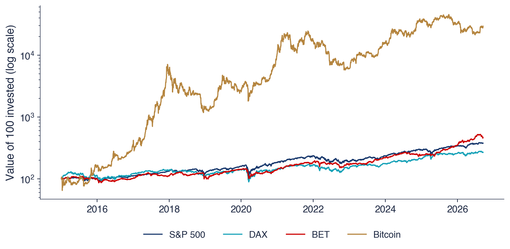

Academia de Studii Economice din București IDA Institute Digital Assets Blockchain Research Center AI4EFin Artificial Intelligence for Energy Finance Academia Română, Institutul de Prognoză Economică MSCA Digital Finance
BET: Bucharest Exchange Trading (index) — indicele de referință al Bursei de Valori București
BET-TR: BET Total Return (index) — indicele BET cu dividendele reinvestite
BNR: Banca Națională a României
BVB: Bursa de Valori București
CAGR: Compound Annual Growth Rate (rata anuală compusă de creștere)
COVID-19: COronaVIrus Disease 2019 (boala provocată de noul coronavirus, identificată în 2019)
CRSP: Center for Research in Security Prices (University of Chicago) — centrul de cercetare a prețurilor valorilor mobiliare, Universitatea din Chicago
EOD: End Of Day (daily closing data) — date de sfîrșit de zi, adică prețuri de închidere
EODHD: EOD Historical Data (market-data provider) — furnizor de date de piață
ETF: Exchange-Traded Fund (fond tranzacționat la bursă)
OMV: Österreichische Mineralölverwaltung (Administrația austriacă a uleiurilor minerale, grupul OMV)
OUG: Ordonanță de Urgență a Guvernului
PIB: Produsul intern brut
SE: Standard Error (eroare standard)
SFE: Statistics of Financial Markets, Exercises (Quantlet collection of the textbook) — colecția de Quantlet-uri a manualului Statistics of Financial Markets
SR: Sharpe Ratio (raportul Sharpe)
SUA: Statele Unite ale Americii
Întrebarea de azi, traseul și rezultatele învățării
Un nivel de preț, luat singur, spune puțin despre o investiție. O acțiune cotată la cîțiva lei și un indice cotat la mii de puncte nu se pot compara, iar niciunul dintre aceste numere nu arată cît a cîștigat investitorul, cît de mult a fluctuat valoarea pe parcurs sau cît de adîncă a fost cea mai mare scădere. Capitolul transformă datele brute de piață în cifre care permit astfel de comparații: randamente, măsuri ale riscului și drawdown-uri, împreună cu eroarea lor de estimare.
Capitolul lucrează peste tot cu date zilnice reale pentru indicele BET al Bursei de Valori București (BVB), S&P 500, DAX, Bitcoin și cinci acțiuni de la BVB, pe perioada de comparație 2015–2026. Datele arată deja temele principale ale cursului. În această perioadă, 100 de unități investite în Bitcoin au ajuns la 29 475, față de 379 în S&P 500, dar drawdown-ul maxim al Bitcoin a fost de −83,4%. Randamentele zilnice au cozi groase (heavy tails): dincolo de trei abateri standard, S&P 500 are de 5,2 ori mai multe zile decît prevede distribuția Normală. Raportul Sharpe (Sharpe ratio) anualizat al S&P 500, 0,72, are o eroare standard de 0,29, așa că majoritatea clasamentelor activelor după astfel de indicatori nu sînt semnificative statistic.
Înaintea oricărei statistici, capitolul se ocupă de calitatea datelor: alegerea sursei primare, ajustarea prețurilor pentru dividende și splituri și erorile pe care le conțin seriile reale.

Valoarea a 100 de unități investite în prima zi din 2015 în S&P 500, DAX, BET și Bitcoin, pe o axă verticală logaritmică: distanțe verticale egale corespund unor variații procentuale egale.
Rezultatele învățării
Alegeți o sursă de date de încredere și verificați o serie de prețuri înainte de utilizare.
Calculați randamente simple și logaritmice și agregați-le în timp și între active.
Anualizați mediile și volatilitățile cu frecvența reală a datelor.
Descrieți o serie de randamente prin momente, cuantile și valori extreme.
Calculați și interpretați CAGR, rapoartele Sharpe și Sortino, drawdown-ul maxim, raportul Calmar și volatility drag.
Comparați diferența dintre doi indicatori cu eroarea lor de estimare.
Varianta pentru studenți a seminarului este disponibilă ca PDF.
Planul capitolului
Date financiare: surse și calitateTipuri și frecvențe de date, surse, prețuri ajustate, erori în datele reale și trei erori sistematice.
Indicatori de performanțăSharpe, Sortino, drawdown, Calmar și volatility drag, cu eroarea lor de estimare.
AI pentru descoperire științificăO întrebare deschisă despre persistența rapoartelor Sharpe și verificările de care are nevoie un studiu asistat de AI.
RezumatFormulele capitolului și întrebări de autoevaluare.
Date financiare: surse și calitate
Fiecare rezultat al cursului pornește de la un fișier de date, iar fiecare eroare din acel fișier trece în rezultate. Secțiunea descrie ce sînt datele financiare, cît de des se înregistrează, de unde provin și ce date folosește cursul. Arată apoi, pe serii reale, cele două operații care decid cel mai des dacă o serie de prețuri poate fi folosită: ajustarea pentru evenimentele corporative și verificarea cu o a doua sursă. Se încheie cu trei erori sistematice care nu lasă nicio urmă vizibilă în date, dar fac rezultatele să pară mai bune decît sînt.
Datele financiare se împart în patru grupe. Datele de piață sînt informațiile produse de un loc de tranzacționare: prețurile tranzacțiilor, cele mai bune cotații bid și ask, volumul tranzacționat și serii derivate din ele, ca nivelurile indicilor, cursurile de schimb, ratele dobînzii și prețurile cripto. Cel mai bun bid este prețul cel mai mare la care cineva este dispus să cumpere într-un moment dat, cel mai bun ask prețul cel mai mic la care cineva este dispus să vîndă; diferența dintre ele, spread-ul, este costul unei cumpărări urmate imediat de o vînzare.
Evenimentele corporative (corporate actions) formează o grupă separată, pentru că schimbă prețul cotat fără să schimbe valoarea deținerii investitorului. Cînd o companie plătește un dividend în numerar, prețul acțiunii scade în ziua ex-dividend cu aproximativ suma plătită, dar acționarul primește banii. La un split, fiecare acțiune veche devine mai multe acțiuni noi, la un preț proporțional mai mic; la o consolidare (reverse split), mai multe acțiuni vechi devin una singură. Acțiunile gratuite funcționează ca un split. O serie de prețuri cotate care ignoră aceste evenimente conține salturi pe care niciun investitor nu le-a trăit.
Datele fundamentale și macroeconomice, ca bilanțurile, profiturile, inflația, produsul intern brut (PIB) și dobînzile de politică monetară, descriu firmele și economia din spatele prețurilor. Datele alternative includ știri, rețele sociale, imagini din satelit și tranzacții pe blockchain. Cursul lucrează în principal cu date zilnice de piață.
Pe scurt
Date de piață: informațiile produse de un loc de tranzacționare
prețuri de tranzacționare, cele mai bune cotații bid și ask, volum tranzacționat
niveluri de indici, cursuri de schimb, rate ale dobînzii, prețuri cripto
Evenimente corporative: evenimente care schimbă prețul fără a schimba valoarea deținerilor
dividende, splituri, consolidări de acțiuni, acțiuni gratuite
Date fundamentale și macroeconomice
bilanțuri și profituri; inflație, PIB, dobînzi de politică monetară
Date alternative
știri, rețele sociale, imagini din satelit, tranzacții pe blockchain
Cursul folosește în principal date zilnice de piață
Banda telegrafică și fluxurile electronice de date
Primul flux de prețuri în timp real a fost telegraful bursier (stock ticker), folosit din 1867. Aparatul primea prin telegraf prețurile tranzacțiilor și le tipărea pe o bandă de hîrtie: prețul ultimei tranzacții, la cîteva minute după ce avusese loc. Investitorii aflați departe de sala bursei puteau urmări piața aproape în timp real.
Astăzi bursele publică fluxuri electronice, pe care furnizorii de date (data vendors) le colectează și le redistribuie. Fiecare cotație și fiecare tranzacție se înregistrează cu un marcaj de timp la microsecundă. Majoritatea studiilor statistice, inclusiv acest curs, nu folosesc direct aceste înregistrări, ci rezumatele lor zilnice, barele OHLCV (deschidere, maxim, minim, închidere, volum; open, high, low, close, volume), prezentate mai jos.
Banda de cotații a supraviețuit în două forme. Benzi mobile cu prețuri și știri defilează încă pe fațadele clădirilor, ca pe clădirea Reuters din New York din imaginea slide-ului. Tot de la bandă provin și simbolurile scurte care identifică titlurile, tickerele: la BVB, TLV este Banca Transilvania, SNP este OMV Petrom, iar H2O este Hidroelectrica.
Pe scurt
Din 1867, telegrafele bursiere (stock tickers) tipăreau pe o bandă de hîrtie prețurile tranzacțiilor, primite prin telegraf
primul flux de prețuri în timp real: prețul ultimei tranzacții, la cîteva minute după ce a avut loc
Azi: fluxuri electronice de la burse, redistribuite de furnizorii de date
fiecare cotație și tranzacție, cu marcaj de timp la microsecundă
majoritatea studiilor folosesc rezumatele zilnice (OHLCV)
Banda de cotații a rămas: prețuri și știri care defilează pe fațadele clădirilor; simbolurile bursiere (tickere), ca TLV, SNP, H2O la BVB
Cel mai fin nivel al datelor sînt datele tick: fiecare tranzacție și fiecare cotație. O piață lichidă produce milioane de înregistrări pe zi. Prețurile tick conțin zgomot de microstructură; sursa cea mai cunoscută este bid–ask bounce: tranzacțiile succesive se execută alternativ la bid și la ask, astfel că prețul tranzacției sare înainte și înapoi chiar dacă valoarea activului nu se schimbă. Barele intrazilnice, de 1, 5 sau 60 de minute, rezumă tick-urile și sînt datele de intrare ale volatilității realizate, subiectul Capitolului 8.
Datele zilnice, cu un rînd pe zi de tranzacționare, sînt standardul acestui curs și al majorității studiilor academice. Bursele funcționează aproximativ 250 de zile pe an, piețele cripto 365 de zile pe an, inclusiv în weekenduri și sărbători. Datele săptămînale, lunare și anuale au mai puține observații, dar sînt mai aproape de orizontul unui investitor pe termen lung.
Frecvența contează pentru fiecare cifră anualizată din capitol. Regula este anualizarea cu numărul real de observații pe an al fiecărei serii, aproximativ 252 pentru o bursă și 365 pentru Bitcoin, niciodată cu un singur factor pentru toate activele. Consecințele unui factor greșit apar în secțiunea despre anualizare.
Pe scurt
Date tick: fiecare tranzacție și cotație
milioane de înregistrări pe zi; zgomot cauzat de alternanța tranzacțiilor între bid și ask (bid–ask bounce)
Bare intrazilnice: 1, 5 sau 60 de minute
folosite pentru volatilitatea realizată (Capitolul 8)
Date zilnice: un rînd pe zi de tranzacționare
standardul acestui curs și al majorității studiilor academice
bursele funcționează aproximativ 250 de zile pe an; piețele cripto, 365 de zile pe an
Date săptămînale, lunare, anuale
mai puține observații, mai aproape de orizontul investitorilor pe termen lung
Regulă: anualizați cu numărul real de observații pe an al fiecărei serii
Tabelul de pe slide enumeră șase tipuri de surse. Bursele (BVB, Deutsche Börse, Bursa din New York, NYSE) publică prețuri oficiale, volume și niveluri ale indicilor, pe site și prin fluxuri contra cost. Furnizorii de date, ca Bloomberg, LSEG (London Stock Exchange Group, fost Refinitiv) și EODHD (EOD Historical Data; EOD înseamnă sfîrșit de zi, end of day), adună prețuri de pe multe piețe, calculează prețuri ajustate și adaugă date fundamentale, pe bază de abonament. Băncile centrale, ca Banca Națională a României (BNR), Banca Centrală Europeană (BCE) și Rezerva Federală, publică gratuit cursuri de referință și rate ale dobînzii.
Bazele de date statistice, ca FRED (Federal Reserve Economic Data, a Rezervei Federale din St. Louis) și Eurostat, oferă serii macroeconomice și randamente ale titlurilor de stat. Bazele de date academice, ca CRSP (Center for Research in Security Prices, Universitatea din Chicago) și biblioteca de date a lui Kenneth French, oferă randamente curățate, inclusiv ale firmelor delistate, și randamente ale factorilor, cu licență universitară sau gratuit. Bursele și agregatoarele cripto furnizează prețuri non-stop și date on-chain.
Furnizorul colectează și curăță datele, dar nu este originea cifrei. Cînd două surse diferă, referința este sursa primară a cifrei: bursa pentru un preț de închidere, banca centrală pentru un curs de referință. Exemplul EUR/RON arată de ce contează această regulă.
Pe scurt
Sursa
Date disponibile
Acces
Burse (BVB, Deutsche Börse, NYSE)
prețuri oficiale, volume, niveluri ale indicilor
site, fluxuri contra cost
Furnizori de date (Bloomberg, LSEG, EODHD)
prețuri de pe multe piețe, prețuri ajustate, date fundamentale
abonament
Bănci centrale (BNR, BCE, Rezerva Federală)
cursuri de referință, rate ale dobînzii
gratuit
Baze de date statistice (FRED, Eurostat)
serii macroeconomice, randamente ale titlurilor de stat
gratuit
Baze de date academice (CRSP, biblioteca Kenneth French)
randamente curățate, inclusiv firme delistate; randamente ale factorilor
licență universitară sau gratuit
Burse și agregatoare cripto
prețuri 24/7, date on-chain
gratuit sau abonament
Furnizorul colectează și curăță datele; sursa primară a cifrei (bursa, banca centrală) este referința atunci cînd două surse diferă
Cursul folosește date zilnice de piață de la EODHD, păstrate ca un instantaneu fix, astfel încît fiecare rezultat să poată fi reprodus. Colecția are 91 de serii: indici, fonduri tranzacționate la bursă (ETF, exchange-traded funds, fonduri listate care urmăresc un indice), acțiuni de la BVB, din SUA și din Europa, active cripto, cursuri de schimb și randamente ale obligațiunilor. Fiecare serie are aceleași coloane: data, deschidere, maxim, minim, închidere, închidere ajustată și volum.
Cursul EUR/RON este excepția. Cursul folosește cursul oficial de referință al BNR, pentru că seria EODHD pentru acest curs conține cotații eronate; slide-ul Erori în date: două serii EUR/RON măsoară efectul lor.
Trei convenții se aplică peste tot. Indicii, cursurile de schimb și activele cripto folosesc prețul de închidere (close); acțiunile și ETF-urile folosesc prețul de închidere ajustat (adjusted close), pentru ca dividendele și spliturile să fie luate în calcul. Cotațiile de weekend și închiderile repetate în zilele libere se elimină, cu excepția activelor cripto, care se tranzacționează în fiecare zi. Fiecare serie se analizează pe propriul calendar, astfel că BET și S&P 500 își păstrează fiecare zilele de tranzacționare. Perioada de comparație a capitolului este 1 ianuarie 2015 – 18 septembrie 2026.
Pe scurt
Date zilnice de piață de la EODHD (EOD Historical Data), salvate o singură dată în repository-ul cursului
91 de serii: indici, ETF-uri, acțiuni (BVB, SUA, Europa), cripto, cursuri de schimb, randamente ale obligațiunilor
O bară zilnică înregistrează cinci numere pentru ziua \(t\): prețul de deschidere \(O_t\), prețul maxim \(H_t\), prețul minim \(L_t\), prețul de închidere \(C_t\) și volumul \(V_t\), numărul de acțiuni tranzacționate. Prin construcție, deschiderea și închiderea se află între minim și maxim, \(L_t \le O_t, C_t \le H_t\). Amplitudinea \(H_t - L_t\) măsoară cît s-a mișcat prețul în timpul zilei și stă la baza estimatorilor de volatilitate bazați pe amplitudine din Capitolul 8.
Tabelul arată ultimele cinci zile de tranzacționare ale Băncii Transilvania (TLV) din datele cursului, între 14 și 18 septembrie 2026. Patru dintre rînduri arată obișnuit: prețul de închidere variază între 33,40 și 35,50 lei, iar volumul între 346 819 și 1 884 988 de acțiuni. Bara din 17 septembrie 2026 este diferită. Deschiderea, maximul, minimul și închiderea sînt toate egale cu 33,40 lei, aceeași valoare ca închiderea din ziua anterioară, iar volumul este de 1 084 380 de acțiuni.
O bară plată este normală pentru o acțiune nelichidă într-o zi cu o singură tranzacție sau pentru o zi liberă completată cu prețul anterior. Cu peste un milion de acțiuni tranzacționate, un singur preț pentru toată ziua este foarte puțin probabil, deci bara este suspectă și trebuie verificată la bursă. Verificări simple de acest tip, inegalitățile dintre cele patru prețuri, barele plate și volumele zero, găsesc multe erori de date înainte ca ele să ajungă în vreo statistică.
Pe scurt
OHLCV: prețul de deschidere \(O_t\), maxim \(H_t\), minim \(L_t\), de închidere \(C_t\) și volumul \(V_t\) din ziua \(t\)
Prin construcție \(L_t \le O_t, C_t \le H_t\); amplitudinea \(H_t - L_t\) măsoară variația prețurilor în timpul zilei
Banca Transilvania (TLV), ultimele cinci zile de tranzacționare din datele noastre:
Data
Open
High
Low
Close
Volum
14 sep. 2026
\(34{,}52\)
\(34{,}86\)
\(34{,}28\)
\(34{,}54\)
346 819
15 sep. 2026
\(34{,}40\)
\(34{,}68\)
\(33{,}10\)
\(34{,}00\)
676 653
16 sep. 2026
\(34{,}00\)
\(34{,}10\)
\(33{,}20\)
\(33{,}40\)
853 078
17 sep. 2026
\(33{,}40\)
\(33{,}40\)
\(33{,}40\)
\(33{,}40\)
1 084 380
18 sep. 2026
\(34{,}22\)
\(35{,}80\)
\(34{,}22\)
\(35{,}50\)
1 884 988
Verificare: pe 17 septembrie 2026 deschidere = maxim = minim = închidere, cu 1 084 380 de acțiuni tranzacționate; o bară plată cu volum mare este suspectă
În ziua unui eveniment corporativ prețul de închidere \(P_t\) face un salt, deși valoarea deținerii nu se schimbă. Prețul ajustat elimină aceste salturi. Fiecare eveniment \(k\), din ziua \(t_k\), are un factor de ajustare\(F_{t_k}\). Pentru un dividend în numerar \(D\),\(F = 1 - D/P_{t-1}\): prețul scade cu aproximativ \(D\) în ziua ex-dividend, iar scalarea prețurilor anterioare cu \(F\) elimină această scădere. Pentru un split \(m\)-la-\(n\), în care \(n\) acțiuni vechi devin \(m\) acțiuni noi, \(F = n/m\); o consolidare este un split cu \(m < n\), deci factorul ei este mai mare decît unu și mărește prețurile anterioare.
Prețul ajustat înmulțește fiecare preț trecut cu factorii tuturor evenimentelor ulterioare:
Produsul din (1.1) parcurge doar evenimentele de după ziua \(t\), așa că ultimele prețuri rămîn neschimbate, iar ajustarea lucrează înapoi în timp. Randamentele calculate din prețuri ajustate includ dividendul și nu au salturi artificiale.
Aceeași idee apare direct în definiția randamentului. Cu un dividend \(D_t\) plătit în ziua \(t\), randamentul simplu este \(R_t = (P_t + D_t)/P_{t-1} - 1\)(Franke, Härdle & Hafner, 2019): cîștigul investitorului este variația prețului plus numerarul primit. Un randament calculat din prețul de închidere ajustat dă, pînă la un termen de ordinul doi neglijabil, aceeași valoare.
Pe scurt
Prețul de închidere \(P_t\) face un salt în ziua unui eveniment corporativ; valoarea deținerii nu se modifică
Factorul de ajustare\(F\) în ziua evenimentului
dividend în numerar \(D\): \(F = 1 - D/P_{t-1}\)
split \(m\)-la-\(n\) (\(m\) acțiuni noi pentru \(n\) vechi): \(F = n/m\); o consolidare este un split cu \(m < n\)
Prețul ajustat: fiecare preț anterior se înmulțește cu factorii tuturor evenimentelor ulterioare, \(P^{\text{adj}}_t = P_t \prod_{k:\, t_k > t} F_{t_k}\)
\(t_k\): ziua evenimentului \(k\); produsul parcurge toate evenimentele de după ziua \(t\), deci ultimele prețuri rămîn neschimbate
randamentele calculate din prețuri ajustate includ dividendul și nu au salturi artificiale
Cu dividende, randamentul simplu este \(R_t = (P_t + D_t)/P_{t-1} - 1\), unde \(D_t\) este dividendul plătit în ziua \(t\)Franke, Härdle & Hafner (2019)
Fie o acțiune cotată la 100, care plătește un dividend de 2 în ziua 5 și are un split 2-la-1 în ziua 10. Factorul dividendului este \(F_5 = 1 - 2/100 = 0{,}98\), iar factorul splitului \(F_{10} = 1/2 = 0{,}50\). Un preț de dinaintea zilei 5 este urmat de ambele evenimente, deci se înmulțește cu \(0{,}98 \times 0{,}50 = 0{,}49\), iar 100 devine 49. Un preț dintre zilele 5 și 9 este urmat doar de split și se înmulțește cu 0,50. Din ziua 10 nu mai urmează niciun eveniment, iar prețul ajustat este egal cu prețul cotat.
Exemplul arată o proprietate a seriei ajustate ușor de uitat: ea se schimbă la fiecare eveniment nou. După următorul dividend, toate prețurile ajustate anterioare se scalează din nou. Două descărcări ale aceleiași serii ajustate, făcute la date diferite, diferă, iar un rezultat poate fi reprodus doar dacă data descărcării se păstrează împreună cu datele.
Indicii au aceeași alegere. Un indice de preț ignoră dividendele, deci nivelul lui scade cînd componentele intră în perioada ex-dividend. Un indice de randament total (total return index) reinvestește dividendele în indice și măsoară cît ar fi cîștigat un investitor care deține componentele. Comparația BET cu BET-TR arată cît de mare devine diferența într-un deceniu.
Pe scurt
O acțiune cotează la 100; în ziua 5 plătește un dividend de 2; în ziua 10 are loc un split 2-la-1
Întrebare pentru sală Pe slide, randamentele zilnice ale celor două serii diferă cu peste 2 puncte procentuale în 24 de zile din 2015 încoace. Butonul ▶ ridică pragul. Cîte zile rămîn la un prag de 10 puncte procentuale?
Răspuns
11 zile. Pe lîngă consolidarea din 16 august 2022 (+230,3% din prețul de închidere, 0,0% din prețul ajustat), alte 10 zile au o diferență de peste 10 puncte procentuale între cele două randamente logaritmice, toate cu prețul de închidere în scădere; cea mai mare, 19,5 puncte procentuale, pe 3 august 2017. Peste 20 de puncte procentuale rămîne doar consolidarea. Un randament calculat din prețul de închidere ar trata aceste zile drept pierderi ale acționarilor, deși valoarea deținerii nu s-a modificat.
Graficul compară cele două prețuri ale Băncii Transilvania pe o axă verticală logaritmică: prețul de închidere așa cum s-a tranzacționat (roșu) și prețul de închidere ajustat (verde). Pe 16 august 2022 prețul tranzacționat sare de la 2,12 la 21,20 lei. Valorii băncii nu i s-a întîmplat nimic: a fost o consolidare a acțiunilor, zece acțiuni vechi într-una nouă.
Un randament logaritmic calculat din prețul de închidere înregistrează această zi ca un cîștig de +230% într-o singură zi, o cifră care ar domina orice medie, varianță sau boltire a seriei. Calculat din prețul ajustat, randamentul aceleiași zile este 0,0%. Înainte de august 2022 prețul ajustat se află deasupra celui tranzacționat, pentru că factorul de consolidare 10 mărește toate prețurile anterioare; dividendele și acțiunile gratuite, care micșorează prețurile anterioare, reduc diferența. La sfîrșitul eșantionului cele două linii coincid, cum cere (1.1).
Consolidarea este evenimentul cel mai vizibil, dar nu singurul. Din 2015, randamentele zilnice ale celor două serii diferă cu peste 2 puncte procentuale în 24 de zile, zilele cu dividende și acțiuni gratuite. Fiecare dintre aceste zile ar adăuga o pierdere falsă unei serii de randamente construite din prețul tranzacționat.
Pe scurt
Pe 16 august 2022 prețul crește brusc de la 2,12 la 21,20 lei: o consolidare a acțiunilor, 10 acțiuni vechi într-una
Randamentul logaritmic din prețul de închidere: \(+230\%\) într-o zi; din prețul ajustat: \(0{,}0\%\)
Din 2015, randamentele zilnice ale celor două serii diferă cu peste 2 puncte procentuale în 24 de zile (dividende, acțiuni gratuite)
Întrebare pentru sală Butonul ▶ mută data investiției din 2014 pînă în 2025. Cu investiția făcută la începutul lui 2022, cu cîte puncte procentuale pe an crește BET-TR mai repede decît BET?
Răspuns
Cu 8,3 puncte procentuale: 29,9% pe an față de 21,6%. Valorile finale sînt 342 și 251, o diferență de 91 de unități, mult mai mică decît 1 005 față de 455 pentru investiția din 23 septembrie 2014. Diferența dintre ratele de creștere rămîne însă între 7,5 și 8,4 puncte procentuale pentru orice an de început: dividendele adaugă în fiecare an aproximativ același randament, iar efectul lor asupra averii se acumulează în timp.
Indicele BET (Bucharest Exchange Trading) este indicele de referință al BVB și un indice de preț. BET-TR (BET Total Return) are aceleași componente, dar reinvestește dividendele lor. Graficul urmărește 100 de unități investite în fiecare pe 23 septembrie 2014: la sfîrșitul eșantionului investiția valorează 455 în BET și 1 005 în BET-TR. Cele două linii pornesc împreună și se depărtează puțin mai mult în fiecare an, pentru că fiecare dividend reinvestit în BET-TR cîștigă și randamentele ulterioare.
În termeni anuali, rata de creștere este de 13,5% pe an pentru BET și de 21,2% pentru BET-TR. Dividendele adaugă 7,8 puncte procentuale pe an, mai mult de jumătate din creșterea indicelui de preț. La BVB, ignorarea dividendelor dă o imagine foarte incompletă a ceea ce a cîștigat un investitor în piață.
Lecția se aplică oricărei comparații de indici: comparați lucruri comparabile. DAX este un indice de randament total, în timp ce S&P 500 și BET sînt indici de preț. O comparație a DAX cu S&P 500 sau cu BET avantajează deci DAX cu randamentul din dividende al celorlalte două piețe. Din acest motiv, tabelele de mai departe din capitol includ BET-TR alături de BET.
Pe scurt
100 de unități investite pe 23 septembrie 2014: 455 în BET (indice de preț), 1 005 în BET-TR (dividende reinvestite)
Rata de creștere: 13,5% pe an pentru BET, față de 21,2% pentru BET-TR; dividendele adaugă 7,8 puncte procentuale pe an
Comparați lucruri comparabile: DAX este un indice de randament total, S&P 500 și BET sînt indici de preț
Întrebare pentru sală Volatilitatea anualizată a seriei EODHD este 13,4%, a cursului BNR 4,5%. Cît devine volatilitatea seriei EODHD dacă eliminăm cele 412 zile în care variațiile zilnice diferă cu peste 1 punct procentual, adică 8% din zile?
Răspuns
Circa 4,7%, aproape de 4,3%, volatilitatea cursului BNR în aceleași zile. Volatilitatea depinde de pătratul abaterilor, deci cîteva sute de cotații greșite o triplează. Dintre cele 412 zile, 307 sînt în 2010–2013. Peste 2 puncte procentuale diferă 283 de zile, peste 5 puncte procentuale 10 zile.
Graficul reprezintă randamentele logaritmice zilnice a două serii ale aceluiași curs de schimb, EUR/RON: seria de la EODHD (roșu) și cursul de referință BNR (verde). Cele două serii au 5 154 de zile comune. În 412 dintre ele, variația zilnică a seriei EODHD diferă de cea a cursului BNR cu peste 1 punct procentual, o diferență foarte mare pentru un curs de schimb ale cărui variații zilnice reale sînt de obicei o mică fracțiune dintr-un procent. Seria roșie arată un bloc de cotații eronate alternante între aproximativ 2010 și 2014 și salturi izolate de peste 10% în ambele direcții.
Erorile schimbă fiecare statistică. Volatilitatea anualizată a seriei EODHD este de 13,4%, față de 4,5% pentru cursul BNR. Cea mai mare variație zilnică a seriei EODHD, în valoare absolută, este de 15,4%, pe 14 august 2025: este revenirea la nivelul corect după o cotație greșită în ziua precedentă. O singură cotație greșită produce astfel două randamente extreme de semne opuse, eroarea și corecția ei, iar ambele măresc volatilitatea și boltirea.
Soluția este regula din slide-ul despre surse: folosiți sursa primară a cifrei. Pentru un curs de referință sursa primară este banca centrală, iar cursul folosește seria BNR. O eroare de acest tip se găsește comparînd două surse sau listînd cele mai mari randamente și verificîndu-le pe fiecare.
Pe scurt
Același curs, 5 154 de zile comune: variația zilnică a seriei EODHD diferă cu peste 1 punct procentual de cea a cursului BNR în 412 zile
Volatilitatea anualizată: 13,4% (EODHD), față de 4,5% (BNR); cea mai mare variație zilnică a seriei EODHD, în valoare absolută: \(15{,}4\%\), pe 14 august 2025, revenirea după o cotație greșită din ziua precedentă
Soluția: folosiți sursa primară a cifrei, cursul de referință BNR
Unele erori nu stau în prețurile individuale, ci în felul în care eșantionul este ales sau folosit. Survivorship bias apare cînd eșantionul conține doar firmele sau fondurile care încă există. Firmele cu rezultate slabe au fost delistate, au fuzionat sau au dat faliment, deci lipsesc, iar randamentul mediu al supraviețuitorilor supraestimează ce ar fi putut cîștiga un investitor (Brown et al., 1992). Un exemplu este componența actuală a BET urmărită înapoi pînă în 2000: companiile care au ieșit între timp din indice nu apar în eșantion.
Look-ahead bias înseamnă folosirea unei informații care nu era disponibilă la data deciziei. Un caz tipic este un raport anual publicat în martie și folosit într-un backtest pentru decizii luate în ianuarie. Backtest-ul tranzacționează atunci pe baza unor cifre pe care investitorul nu le putea cunoaște încă. Datele din baze înregistrează adesea perioada la care se referă o cifră, nu data publicării ei, ceea ce face această eroare ușor de comis.
Data snooping înseamnă încercarea multor reguli pe aceleași date și raportarea celei mai bune. Chiar dacă nicio regulă nu funcționează, cea mai bună dintre multe pare semnificativă din întîmplare. Harvey, Liu & Zhu (2016) concluzionează că sute de predictori publicați ai randamentelor sînt probabil descoperiri false. Toate cele trei erori supraestimează randamentele și niciuna nu apare în statisticile descriptive ale eșantionului final, care arată perfect normal. Ele pot fi evitate doar prin designul studiului.
Pe scurt
Survivorship bias: în eșantion apar doar firmele sau fondurile care încă există
firmele cu rezultate slabe au dispărut, deci randamentul mediu este supraestimat Brown et al. (1992)
exemplu: componența actuală a BET, urmărită înapoi pînă în 2000
Look-ahead bias: folosirea unei informații care nu era disponibilă la data deciziei
rapoarte anuale publicate în martie folosite pentru decizii din ianuarie
Data snooping: încercarea multor reguli pe aceleași date și raportarea celei mai bune
sute de predictori publicați ai randamentelor sînt probabil descoperiri false Harvey, Liu & Zhu (2016)
Fiecare dintre aceste erori supraestimează randamentele; niciuna nu se vede în statisticile descriptive
Erorile din această secțiune pot fi prinse printr-o rutină scurtă, aplicată fiecărei serii noi. Întîi, notați sursa: sursa primară a cifrei și coloana folosită, close sau adjusted close. Apoi verificați calendarul: weekendurile, zilele libere și zilele lipsă, iar într-o analiză comună a mai multor active, aceleași date pentru toate.
În al treilea rînd, căutați salturile: listați cele mai mari 10 randamente în valoare absolută și verificați-le pe fiecare în știrile din ziua respectivă. Un crah real are o cauză cunoscută; o consolidare sau o cotație greșită nu are. În al patrulea rînd, căutați barele plate, volumul zero și prețurile repetate, care arată zile libere completate cu ultimul preț sau prețuri stale (neactualizate). În al cincilea rînd, verificați unitățile și moneda: lei, euro sau dolari, puncte de indice, prețuri în cenți.
În sfîrșit, păstrați fișierul brut și data descărcării și nu modificați niciodată datele manual. Orice corecție se face în cod, unde poate fi citită, repetată și anulată. Aceste reguli costă puțin și protejează toate rezultatele ulterioare ale cursului.
Pe scurt
Sursa: sursa primară a cifrei și coloana folosită (close sau adjusted close)
Calendarul: weekenduri, zile libere, zile lipsă; aceleași date pentru toate activele într-o analiză comună
Salturi: listați cele mai mari 10 randamente în valoare absolută și verificați-le pe fiecare în știri
Bare plate, volum zero, prețuri repetate: zile libere completate cu ultimul preț sau prețuri stale (neactualizate)
Unități și monedă: lei, euro, dolari; puncte de indice; prețuri în cenți
Păstrați fișierul brut și data descărcării; nu modificați niciodată datele manual
Prețurile provin de la burse, furnizori de date și bănci centrale, iar cînd sursele diferă referința este sursa primară a cifrei. Pentru acțiuni trebuie folosit prețul ajustat, iar cînd dividendele contează, ca la BVB, trebuie folosiți indici de randament total în locul indicilor de preț: în 2014–2026, BET-TR a crescut de la 100 la 1 005, BET doar la 455.
Datele reale conțin erori, ca consolidarea zece-la-unu a Băncii Transilvania sau cotațiile greșite ale seriei EUR/RON de la EODHD. Ele se găsesc verificînd salturile, barele plate și o a doua sursă. Survivorship bias, look-ahead bias și data snooping supraestimează rezultatele fără să lase vreo urmă vizibilă în date.
Pe scurt
Prețurile provin de la burse, furnizori și bănci centrale; sursa primară a cifrei este referința
Folosiți prețuri ajustate pentru acțiuni și indici de randament total cînd dividendele contează
Datele reale conțin erori: verificați salturile, barele plate și o a doua sursă
Survivorship bias, look-ahead bias și data snooping supraestimează rezultatele fără să lase urme vizibile
Sinteza secțiunii
O serie de prețuri utilizabilă este capătul unui lanț de decizii: sursa, coloana, calendarul, ajustarea pentru evenimentele corporative și verificarea erorilor. Exemplele secțiunii arată că fiecare verigă contează: o singură consolidare produce un randament fictiv de +230% într-o zi, ignorarea dividendelor scade cu 7,8 puncte procentuale pe an creșterea pieței românești, iar o serie cu cotații greșite triplează volatilitatea unui curs de schimb. Cu prețuri curate, secțiunea următoare explică de ce statistica din curs lucrează cu randamente, nu cu prețuri.
De la prețuri la randamente
Metodele statistice ale cursului se aplică randamentelor, nu prețurilor. Secțiunea dă motivele: randamentele nu au unitate de măsură, deci se pot compara între active, și oscilează în jurul unui nivel stabil, în timp ce prețurile au trend. A doua proprietate este precizată prin noțiunea de staționaritate slabă și verificată formal cu testul Dickey–Fuller augmentat (ADF, augmented Dickey–Fuller) pe S&P 500.
Un preț are unitate de măsură și scară; un randament nu are. O variație de 1 leu este mare pentru o acțiune de 2 lei și mică pentru una de 500 de lei. Randamentul exprimă variația față de prețul inițial, deci randamentele unor active diferite, în monede diferite și pe perioade diferite, se pot compara direct. Și întrebarea investitorului este relativă: cu cît s-a schimbat averea mea? Răspunsul este exact un randament.
Al doilea motiv este statistic. Prețurile au trend și nu revin la un nivel fix, așa că media și varianța lor depind de perioada observată. Randamentele oscilează în jurul unui nivel stabil. Conceptul din spatele acestei diferențe este staționaritatea slabă (weak stationarity): o serie este slab staționară dacă media ei este constantă, varianța ei este constantă, iar covarianța dintre două observații depinde doar de distanța dintre ele, lagul, nu de dată.
Majoritatea metodelor statistice ale cursului presupun cel puțin staționaritate slabă, pentru că doar atunci mediile în timp estimează mărimi fixe ale populației. O medie de eșantion a prețurilor nu estimează nimic stabil; o medie de eșantion a randamentelor estimează randamentul așteptat. Următoarele două slide-uri arată diferența pe date și o testează formal.
Pe scurt
Un preț are unitate de măsură și scară; un randament nu are
o variație de 1 leu este mare pentru o acțiune de 2 lei și mică pentru una de 500 de lei
Randamentele unor active, monede și perioade diferite se pot compara direct
Prețurile au trend și nu revin la un nivel fix; randamentele oscilează în jurul unui nivel stabil
serie slab staționară: medie constantă, varianță constantă și o covarianță care depinde doar de lag
majoritatea metodelor statistice ale cursului presupun (cel puțin) staționaritate slabă
Investitorul este interesat de variația relativă a averii, adică exact de un randament
Întrebare pentru sală Butonul ▶ împarte eșantionul 2000–2026 în pînă la 6 subperioade egale. Cu 5 subperioade, ce se întîmplă cu media și abaterea standard a randamentelor zilnice de la o subperioadă la alta?
Răspuns
Media randamentelor rămîne aproape de zero, între −0,016% și 0,057% pe zi, în timp ce media prețului crește de la 1 145 la 5 235 de puncte. Abaterea standard a randamentelor variază însă între 0,97% și 1,53% pe zi: randamentele oscilează în jurul unui nivel stabil, dar volatilitatea lor se schimbă în timp. Testul ADF respinge rădăcina unitară pentru randamente (statistica −14,3), nu și pentru logaritmul prețului (statistica −2,08, p-value 0,56).
Panoul de sus arată S&P 500 în puncte de indice din 2000. Prețul are un trend crescător, cu oscilații lungi: scăderile din 2000–2002 și 2008–2009 și o creștere puternică după 2012. Media și dispersia lui pe orice fereastră depind de anii pe care îi acoperă fereastra, ceea ce înseamnă, în practică, nestaționaritate.
Panoul de jos arată randamentele logaritmice zilnice ale aceluiași indice. Ele oscilează în jurul lui zero pe toată perioada, în anii calmi și în cei agitați, ca în criza financiară din 2008 și în șocul pandemiei din 2020. Nivelul seriei nu se deplasează.
Panoul de jos arată și că mărimea oscilațiilor nu este aceeași în toate perioadele: randamentele mari vin în grupuri, în jurul lui 2008 și 2020. Fenomenul, gruparea volatilității (volatility clustering), nu contrazice staționaritatea slabă, care privește varianța necondiționată. O serie poate avea o varianță constantă pe termen lung, în timp ce varianța ei condiționată de trecutul recent se schimbă de la o zi la alta. Modelele care descriu acest lucru sînt subiectul Capitolului 9.
Pe scurt
Sus: prețul are trend crescător, cu oscilații lungi; media și dispersia lui se schimbă în timp
Jos: randamentele oscilează în jurul lui zero, în perioade calme și agitate (2008, 2020)
Testul Dickey–Fuller augmentat (ADF) (Dickey & Fuller, 1979) întreabă dacă o serie are o rădăcină unitară (unit root), adică dacă se comportă ca un mers aleator (random walk). Ipoteza nulă \(H_0\) este rădăcina unitară, deci seria este nestaționară; alternativa \(H_1\) este că seria este staționară. Testul regresează variația zilnică a seriei pe nivelul ei din ziua anterioară:
În (1.2),\(y_t\) este seria testată, logaritmul prețului sau randamentul logaritmic, iar \(\Delta y_t = y_t - y_{t-1}\) este variația ei de la ziua \(t-1\) la ziua \(t\). Constanta \(\alpha\) și trendul liniar \(\beta t\) permit o derivă și un trend; cele \(p\) variații cu lag, cu coeficienții \(\delta_j\), preiau autocorelația pe termen scurt, iar \(\varepsilon_t\) este eroarea. Coeficientul esențial este \(\gamma\). Dacă \(\gamma = 0\), variația de azi nu depinde de nivelul de ieri: seria nu are un nivel la care să revină, adică are o rădăcină unitară. Dacă \(\gamma < 0\), un nivel ridicat este urmat în medie de o scădere, iar unul scăzut de o creștere, deci seria este readusă spre nivelul ei și este staționară.
Testul respinge \(H_0\) cînd statistica \(t\) a lui \(\hat\gamma\) este sub o valoare critică. Valorile critice nu vin din distribuția Student, ci din tabelele Dickey–Fuller, pentru că în ipoteza \(H_0\) regresorul \(y_{t-1}\) este el însuși nestaționar, iar statistica \(t\) are o distribuție nestandard, deplasată spre stînga. Valoarea critică depinde și de includerea constantei și a trendului.
Pe scurt
Testul ADF (augmented Dickey–Fuller) Dickey & Fuller (1979): are seria o rădăcină unitară (un mers aleator)?
\(H_0\): rădăcină unitară, seria este nestaționară; \(H_1\): seria este staționară
Testul regresează variația zilnică a seriei pe nivelul ei din ziua anterioară
Pe date zilnice S&P 500 din 2000, testul dă două răspunsuri clare. Pentru logaritmul prețului, cu trend în regresie, statistica este −2,08, valoarea critică de 5% este −3,41, iar p-value este 0,56: rădăcina unitară nu este respinsă. Pentru randamentele logaritmice, statistica este −14,3, valoarea critică de 5% este −2,86, iar p-value este sub 0,001: rădăcina unitară este respinsă. Cele două valori critice diferă pentru că prima regresie include un trend, iar a doua doar o constantă.
P-value este probabilitatea, în ipoteza \(H_0\), de a obține o statistică cel puțin la fel de negativă ca cea observată. Un p-value de 0,56 înseamnă că un mers aleator ar produce o statistică precum −2,08 în mai mult de jumătate din cazuri, deci datele nu dau niciun motiv de îndoială asupra rădăcinii unitare. O statistică de −14,3 este practic imposibilă în prezența unei rădăcini unitare. Cu pragul obișnuit de 0,05, \(H_0\) este respinsă pentru randamente și păstrată pentru prețuri.
Concluzia susține alegerea cursului: prețurile se comportă ca un mers aleator, randamentele sînt staționare, deci modelele statistice se construiesc pentru randamente. Faptul că rădăcina unitară nu este respinsă nu dovedește că ea există, dar cele două rezultate împreună dau o imagine coerentă. Rădăcinile unitare și ipoteza mersului aleator sînt studiate în detaliu în Capitolul 7.
Pe scurt
S&P 500, date zilnice din 2000
logaritmul prețului (cu trend): statistica \(-2{,}08\), valoarea critică 5% \(-3{,}41\), p-value \(0{,}56\): nu respingem rădăcina unitară
Randamentele sînt preferate prețurilor din două motive: nu au unitate de măsură, deci se pot compara între active și perioade, și sînt staționare, în timp ce prețurile nu sînt. Pe S&P 500 din 2000, testul ADF păstrează rădăcina unitară pentru logaritmul prețului (statistica −2,08, p-value 0,56) și o respinge pentru randamentele logaritmice (statistica −14,3). Există însă două moduri de a defini un randament, iar secțiunea următoare arată cînd diferă și pe care să-l folosim.
Randamente simple și logaritmice
Un randament se poate defini ca variația relativă a prețului sau ca variația logaritmului lui. Cele două definiții dau aproape același număr într-o zi obișnuită și numere foarte diferite într-un crah sau pe un orizont lung. Secțiunea le definește pe amîndouă, măsoară diferența dintre ele, o ilustrează pe zilele cele mai extreme ale Bitcoin și S&P 500 și dă o regulă de alegere între ele.
Raportul \(1 + R_t = P_t/P_{t-1}\) este randamentul brut (gross return): valoarea la momentul \(t\) a unei unități investite la \(t-1\). De aici încolo, \(P_t\) este prețul de închidere al unui indice sau prețul ajustat al unei acțiuni, astfel încît dividendele și spliturile sînt deja luate în calcul.
Randamentul simplu este mărginit inferior: \(R_t \ge -1\). Marginea exprimă răspunderea limitată: prețul nu poate scădea sub zero, deci un acționar nu poate pierde mai mult decît a investit. De exemplu, cu \(P_{t-1} = 100\) și \(P_t = 110\),\(R_t = 10\%\). Este cifra pe care o vede investitorul în extrasul de cont cînd fondul raportează că „a cîștigat 10%”.
Denumirea vine de la capitalizare. Un leu investit la rata \(r\), capitalizată de \(m\) ori în cursul perioadei, ajunge la \((1 + r/m)^m\), iar pentru \(m \to \infty\) această valoare tinde la \(e^{r}\). Randamentul logaritmic este deci rata care, capitalizată continuu pe durata perioadei, transformă \(P_{t-1}\) în \(P_t\). Cu \(P_{t-1} = 100\) și \(P_t = 110\),\(r_t = \ln 1{,}1 = 9{,}53\%\), sub randamentul simplu de 10% calculat din aceleași prețuri.
Spre deosebire de randamentul simplu, randamentul logaritmic este nemărginit: \(r_t \in (-\infty, +\infty)\), iar pierderea totală, \(P_t = 0\), corespunde lui \(r_t = -\infty\). Randamentele logaritmice sînt alegerea standard în statistica piețelor financiare. Motivul principal, arătat în secțiunea următoare, este că se adună în timp, astfel încît randamentul pe o perioadă lungă este suma randamentelor zilnice. Domeniul lor, întreaga axă reală, se potrivește și mai bine modelelor statistice.
Pe scurt
Randamentul logaritmic (randamentul compus continuu)
Logaritmul este o funcție concavă, deci graficul lui se află sub tangenta în zero, dreapta \(r = R\). Prin urmare \(r < R\) pentru orice \(R \neq 0\), atît pentru cîștiguri, cît și pentru pierderi. Pentru variații mici, primul termen de corecție, \(-R^2/2\), dă aproape toată diferența.
Pentru o variație zilnică obișnuită, \(R = 1\%\),\(r = 0{,}995\%\), iar aproximarea \(R - R^2/2\) dă tot 0,995%. Diferența \(R - r\) este de 0,5 puncte de bază; un punct de bază (bp, basis point) este 0,01 puncte procentuale. Pentru o variație mare, \(R = 10\%\),\(r = 9{,}531\%\), în timp ce \(R - R^2/2 = 9{,}500\%\), iar diferența \(R - r\) este de 46,9 puncte de bază. Pentru date zilnice cele două randamente sînt practic egale; pentru variații mari și orizonturi lungi diferă, iar diferența crește cu pătratul variației.
Pe scurt
Dezvoltarea în serie Taylor a logaritmului în jurul lui 0
Întrebare pentru sală Bitcoin, 7 decembrie 2017: R = +25,2%, r = +22,5%, deci R − r = 2,7 puncte procentuale. Cît este diferența R − r pentru o scădere de aceeași mărime, R = −25,2%?
Răspuns
3,8 puncte procentuale: r = ln(0,748) = −29,0%. Funcția ln este concavă, iar diferența este mai mare pentru scăderi decît pentru creșteri de aceeași mărime. Aproximarea R²/2 = 3,2 puncte procentuale este aceeași pentru ambele semne; termenul R³/3 al seriei Taylor o corectează în sus la scăderi și în jos la creșteri. La R = −37,2% (Bitcoin, 12 martie 2020), diferența ajunge la 9,3 puncte procentuale.
Graficul reprezintă randamentul logaritmic în funcție de randamentul simplu. Linia punctată este dreapta de 45 de grade \(r = R\), curba continuă este \(r = \ln(1 + R)\), iar marcajele sînt cele mai mari variații zilnice ale Bitcoin (cercuri) și ale S&P 500 (pătrate). În jurul lui zero curba și dreapta coincid; departe de zero curba se află sub dreaptă de ambele părți, iar diferența crește mult mai repede pe partea pierderilor.
Cele mai mari variații zilnice din datele cursului arată mărimea diferenței. Pe 12 martie 2020 Bitcoin a avut un randament simplu de −37,2%, dar un randament logaritmic de −46,5%. Pe 7 decembrie 2017 a avut un randament simplu de +25,2% și unul logaritmic de +22,5%. Pe 16 martie 2020 S&P 500 a avut un randament simplu de −12,0% și unul logaritmic de −12,8%.
Pentru că curba este concavă, pierderile par mai mari, iar cîștigurile mai mici atunci cînd sînt măsurate în randamente logaritmice. Asimetria are un sens precis: un randament logaritmic de −46,5% și unul de +46,5% se anulează exact, în timp ce o pierdere simplă de 37,2% cere un cîștig simplu mult mai mare de 37,2% pentru a fi recuperată. În astfel de zile, alegerea tipului de randament schimbă cifra raportată cu cîteva puncte procentuale.
Pe scurt
Bitcoin, 12 martie 2020: \(R = -37{,}2\%\), dar \(r = -46{,}5\%\)
Bitcoin, 7 decembrie 2017: \(R = +25{,}2\%\), \(r = +22{,}5\%\)
Fie traiectoria prețului \(100 \to 110 \to 99\). Randamentele simple sînt \(+10\%\) și \(-10\%\), iar suma lor, zero, sugerează că investitorul a revenit de unde a plecat. În realitate investitorul a pierdut: compunerea celor două randamente dă \(1{,}1 \times 0{,}9 - 1 = -1{,}0\%\), variația de la 100 la 99.
Randamentele logaritmice ale aceleiași traiectorii sînt \(r_1 = \ln 1{,}1 = 9{,}53\%\) și \(r_2 = \ln 0{,}9 = -10{,}54\%\). Suma lor este \(-1{,}01\%\), egală exact cu \(\ln(99/100)\). Adunarea randamentelor logaritmice dă randamentul logaritmic corect pe cele două perioade, fără nicio corecție.
Regula care rezultă este principala diferență practică dintre cele două randamente: randamentele simple se compun, adică randamentele brute se înmulțesc, iar cele logaritmice se adună. Un cîștig și o pierdere de aceeași mărime procentuală nu se anulează; în randamente simple, pierderea de 10% se aplică unei baze mai mari decît cîștigul de 10%.
Pe scurt
Traiectoria prețului \(100 \to 110 \to 99\)
randamente simple: \(+10\%\) și \(-10\%\); suma lor, 0, este înșelătoare
Întrebarea duce exemplul anterior la cifre mai mari. O acțiune crește cu 50% într-un an și scade cu 50% în anul următor. Ce credeți? La ce nivel ajunge prețul după doi ani, față de nivelul inițial?
Compunerea randamentelor brute dă \(1{,}5 \times 0{,}5 = 0{,}75\): averea s-a modificat cu −25%, deși cele două procente au aceeași mărime. În randamente logaritmice, \(\ln 1{,}5 + \ln 0{,}5 = \ln 0{,}75 = -28{,}8\%\), o sumă directă.
Forma generală a rezultatului este regula revenirii. După o pierdere \(x\), averea este de \(1 - x\) ori nivelul anterior, iar revenirea la acel nivel cere un cîștig de \(x/(1 - x)\). O pierdere de 50% cere deci un cîștig de 100%. Cîștigul necesar crește mai repede decît pierderea, motiv pentru care adîncimea unei scăderi contează atît de mult în măsurile de drawdown ale capitolului.
Pe scurt
O acțiune crește cu 50% într-un an și scade cu 50% în anul următor
Ce credeți? La ce nivel ajunge prețul după doi ani, față de nivelul inițial?
Răspuns
\(1{,}5 \times 0{,}5 = 0{,}75\): averea s-a modificat cu \(-25\%\)
Tabelul de pe slide asociază fiecărei situații un tip de randament. Pentru agregarea în timp se folosesc randamentele logaritmice, pentru că randamentul logaritmic pe \(k\) perioade este o sumă, \(r_t(k) = r_t + \dots + r_{t-k+1}\). Pentru un portofoliu din mai multe active se folosesc randamentele simple, pentru că randamentul portofoliului este exact media ponderată \(R_p = \sum_i w_i R_i\). Pentru modelarea statistică sînt preferate randamentele logaritmice, pentru că sînt nemărginite și distribuția lor este mai aproape de una simetrică.
Pentru raportarea către investitori se folosește randamentul simplu, deoarece „fondul a cîștigat 10%” este un randament simplu. Pentru date zilnice și variații mici oricare dintre ele este potrivit, pentru că diferența este aproximativ \(R^2/2\), o jumătate de punct de bază într-o zi cu 1%.
Indiferent de alegere, tipul de randament trebuie precizat. Un „randament de 10%” este ambiguu: ca randament logaritmic, el corespunde unui randament simplu de \(e^{0{,}1} - 1\), aproximativ 10,5%. Pentru o singură zi ambiguitatea costă puțin; pe un deceniu sau pentru un activ volatil ca Bitcoin poate schimba concluziile.
Pe scurt
Situația
Randament
Motivul
Agregarea în timp
logaritmic
\(r_{t}(k) = r_t + \dots + r_{t-k+1}\), o sumă
Portofoliu din mai multe active
simplu
\(R_p = \sum_i w_i R_i\), exact
Modelare statistică
logaritmic
nemărginit, mai aproape de o distribuție simetrică
Raportare către investitori
simplu
„fondul a cîștigat 10%” este un randament simplu
Date zilnice, variații mici
oricare
diferența este aproximativ \(R^2/2\)
Precizați întotdeauna tipul de randament folosit: un „randament de 10%” este ambiguu
Randamentul simplu este \(R_t = P_t/P_{t-1} - 1\), iar cel logaritmic \(r_t = \ln(P_t/P_{t-1}) = \ln(1 + R_t)\). Pentru orice variație nenulă \(r < R\), iar diferența este aproximativ \(R^2/2\), neglijabilă pentru date zilnice și mare în crahuri, ca pe 12 martie 2020, cînd Bitcoin a scăzut cu 37,2% în randament simplu și cu 46,5% în randament logaritmic.
Randamentele logaritmice se adună în timp; cele simple se adună între active. Cîștigurile și pierderile de aceeași mărime nu se anulează: +50% urmat de −50% lasă 75% din averea inițială.
\(r < R\) pentru orice variație nenulă; diferența este aproximativ \(R^2/2\), neglijabilă pentru date zilnice
Randamentele logaritmice se adună în timp; cele simple se adună între active
Cîștigurile și pierderile de aceeași mărime nu se anulează
Sinteza secțiunii
Cele două randamente conțin aceeași informație, dar se comportă diferit la agregare. Randamentele logaritmice (1.4) se adună în timp și sînt datele de intrare naturale ale modelelor statistice; randamentele simple (1.3) se mediază exact între active și sînt cele pe care le văd investitorii. Diferența, aproximativ \(R^2/2\), este de 0,5 puncte de bază într-o zi cu 1% și de 9,3 puncte procentuale în cea mai proastă zi a Bitcoin. Secțiunea următoare folosește ambele proprietăți pentru a construi randamente pe mai multe perioade și randamente ale portofoliilor.
Randamente pe mai multe perioade și ale portofoliilor
Investitorii dețin active luni sau ani și de obicei dețin mai multe active. Secțiunea construiește randamentul pe \(k\) perioade din randamentele zilnice, leagă randamentele cumulate de avere și calculează randamentul unui portofoliu. Cele două reguli de agregare din secțiunea anterioară, suma în timp pentru randamentele logaritmice și media ponderată între active pentru cele simple, se aplică pe date reale: patru piețe în 2015–2026 și un portofoliu din două acțiuni BVB.
Pe \(k\) perioade care se încheie la \(t\), de la \(P_{t-k}\) la \(P_t\), randamentele simple brute se înmulțesc, iar randamentele logaritmice se adună:
Ambele identități din (1.6) rezultă din scrierea lui \(P_t/P_{t-k}\) ca produs de \(k\) rapoarte de cîte o perioadă; logaritmul transformă produsul într-o sumă. Aici \(R_t(k)\) și \(r_t(k)\) sînt randamentul simplu și cel logaritmic pe cele \(k\) perioade.
Aditivitatea randamentelor logaritmice are o consecință importantă: media și varianța randamentului logaritmic pe \(k\) zile rezultă din cele ale randamentelor zilnice. Media unei sume este suma mediilor, deci media pe \(k\) zile este de \(k\) ori media zilnică; dacă randamentele zilnice sînt necorelate, și varianța sumei este de \(k\) ori varianța zilnică. Pe aceasta se bazează regulile de anualizare din secțiunea despre anualizare.
Randamentele săptămînale, lunare sau anuale se calculează din prețurile de la sfîrșitul fiecărei perioade, nu prin medierea randamentelor zilnice din interiorul ei. Media a 21 de randamente zilnice este o cifră zilnică, nu un randament lunar; randamentul logaritmic lunar este suma celor zilnice sau, echivalent, logaritmul raportului dintre cele două prețuri de sfîrșit de lună.
unde \(\prod_{t=1}^{T}\) este produsul celor \(T\) randamente brute, iar \(\exp(x) = e^x\) inversează logaritmul. Cele două forme din (1.7) sînt cele două identități din (1.6) aplicate pe tot eșantionul.
Randamentul simplu cumulat\(\text{CSR}_T = W_T/W_0 - 1\) este cîștigul investitorului, în procente. Randamentul logaritmic cumulat\(\text{CLR}_T = \ln(W_T/W_0) = \sum_t r_t\) este suma randamentelor logaritmice, iar cele două sînt legate prin \(\text{CSR}_T = e^{\text{CLR}_T} - 1\). Randamentul logaritmic cumulat este scara naturală pentru orizonturi lungi: crește liniar cînd rata de creștere este constantă, în timp ce randamentul simplu cumulat crește exponențial.
De aceea graficele averii folosesc o axă verticală logaritmică. Pe o scară logaritmică, distanțe verticale egale corespund unor variații procentuale egale: o dublare de la 100 la 200 și una de la 1 000 la 2 000 au aceeași înălțime. O rată de creștere constantă apare ca o dreaptă, iar panta dreptei este rata de creștere logaritmică.
Pe scurt
Averea după \(T\) perioade, pornind de la \(W_0\): \(W_T = W_0 \prod_{t=1}^{T} (1 + R_t) = W_0 \exp\Big(\sum_{t=1}^{T} r_t\Big)\)
Întrebare pentru sală Cu ponderi egale, suma ponderată a randamentelor logaritmice dă un randament logaritmic cumulat de 2,47 în loc de 2,56. Butonul ▶ mută ponderea TLV de la 10% la 90%. La ce pondere este cea mai mare diferența dintre cele două randamente cumulate?
Răspuns
La 50%: 0,093. La 25% și 75% diferența este circa 0,07, la 10% și 90% doar 0,033. Diferența zilnică este aproximativ w(1 − w)(RTLV − RSNP)²/2, cea mai mare la ponderi egale și zero pentru o singură acțiune. Cea mai mare diferență zilnică, 13,9 puncte de bază pe 31 mai 2016, acoperă trei zile de tranzacționare: SNP nu are prețuri pe 27 și 30 mai 2016, așa că ambele randamente se calculează de la 26 mai; TLV crește cu 6,6%, SNP scade cu 4,0%.
Volatilitatea anualizată (%) după frecvența randamentelor logaritmice
Exemplu lucrat: anualizarea mediei și a volatilității
Întrebare pentru sală Din randamente zilnice, volatilitatea anualizată a S&P 500 pe 2015–2026 este 17,7%. Butonul ▶ trece la randamente săptămînale și lunare. Cît dă √12 × σ calculat din randamentele lunare?
Răspuns
15,0%; din randamente săptămînale, 16,7%. Regula rădăcinii pătrate presupune randamente necorelate, cu varianța constantă, iar S&P 500 nu o respectă exact pe 2015–2026. Seria lunară are doar 140 de randamente, deci și estimarea ei are o eroare mai mare. La Bitcoin cele trei valori sînt apropiate: 66,7%, 66,7% și 66,3%.
Media anuală a randamentelor logaritmice zilnice și precizia ei
Întrebare pentru sală Pe 2015–2026 (11,7 ani), intervalul de încredere 95% al mediei anuale S&P 500 este [1,1%; 21,4%]. Butonul ▶ mută începutul eșantionului. Cu începutul în 2020 (6,7 ani), conține intervalul valoarea 0?
Răspuns
Da: 12,7% ± 15,3%, adică [−2,6%; 28,1%]. Media estimată este mai mare decît pe 2015–2026, dar eroarea standard crește de la 5,2% la 7,8%, aproximativ ca 1/√Y. Cele 1 686 de randamente zilnice nu ajută: precizia mediei depinde de numărul de ani. Un interval care conține 0 nu arată că media este zero, ci doar că 6,7 ani de date nu o separă de zgomot.
Întrebare pentru sală Butonul ▶ mută data investiției din 2015 pînă în 2025. Cu investiția făcută la începutul lui 2022, care dintre cele patru serii are cea mai mare valoare finală?
Răspuns
BET: 251, față de Bitcoin 170, S&P 500 161 și DAX 159. Pentru investiția din 2015, Bitcoin ajunge la 29 475, iar pentru cea din 2018 la 592, tot pe primul loc. Clasamentul după randamentul cumulat depinde de data de început.
Graficul urmărește 100 de unități investite pe 5 ianuarie 2015, prima zi din 2015 în care toate cele patru serii au prețuri, pe o axă verticală logaritmică. Tabelele CAGR de mai departe pornesc fiecare serie din prima ei zi de tranzacționare din 2015, astfel că ratele lor de creștere diferă puțin de cele implicate de acest grafic: 11,9% față de 12,0% pentru S&P 500, 60,6% față de 62,5% pentru Bitcoin. La sfîrșitul eșantionului investiția valorează 379 în S&P 500, 267 în DAX, 470 în BET și 29 475 în Bitcoin. DAX este un indice de randament total, iar S&P 500 și BET sînt indici de preț, deci primele trei linii nu compară lucruri comparabile, așa cum s-a arătat pentru BET și BET-TR.
Pentru Bitcoin, randamentul simplu cumulat este de 29 375%, iar randamentul logaritmic cumulat de 5,69; pentru BET, cele două cifre sînt 370% și 1,55. Perechile arată scările diferite ale celor două măsuri: un randament simplu cumulat de zeci de mii de procente corespunde unui randament logaritmic cumulat mai mic de șase, iar relația \(\text{CSR}_T = e^{\text{CLR}_T} - 1\) le leagă în ambele cazuri.
Axa logaritmică face graficul lizibil. Pe o axă liniară, linia Bitcoin ar urca pînă aproape de 30 000, iar toate celelalte serii ar apărea ca linii plate lîngă baza graficului. Pe axa logaritmică se vede la toate cele patru serii șocul comun din martie 2020, la fel ca urcarea Bitcoin din 2017 și scăderea lui din 2018.
Pe scurt
100 de unități investite pe 5 ianuarie 2015, prima zi cu prețuri pentru toate cele patru serii (tabelele CAGR pornesc fiecare serie din prima ei zi din 2015); valori finale: S&P 500 379, DAX 267, BET 470, Bitcoin 29 475
Un portofoliu conține \(n\) active cu ponderile \(w_1, \dots, w_n\),\(\sum_i w_i = 1\), fixate la începutul perioadei, unde \(w_i\) este partea din avere investită în activul \(i\). Fie \(R_i\) și \(r_i\) randamentul simplu și cel logaritmic al activului \(i\) pe perioadă. Cum averea este aditivă între active, valoarea portofoliului la sfîrșitul perioadei este de \(\sum_i w_i (1 + R_i)\) ori valoarea inițială, iar randamentul portofoliului este exact media ponderată a randamentelor simple:
Randamentul logaritmic al portofoliului, din (1.8), este logaritmul unei sume ponderate, nu o sumă ponderată de logaritmi. De exemplu, cu 60% în activul 1, cu \(R_1 = 10\%\), și 40% în activul 2, cu \(R_2 = -5\%\), randamentul portofoliului este \(R_p = 0{,}6 \times 10\% + 0{,}4 \times (-5\%) = 4{,}0\%\), iar randamentul logaritmic exact al portofoliului este \(r_p = \ln(1 + R_p) = 3{,}92\%\). Randamentele logaritmice ponderate dau \(0{,}6 \times 9{,}53\% + 0{,}4 \times (-5{,}13\%) = 3{,}67\%\), o valoare prea mică. Pentru ponderi între zero și unu, randamentul logaritmic ponderat este întotdeauna prea mic, din cauza convexității exponențialei (inegalitatea lui Jensen).
Ponderile nu rămîn fixe. Cînd un activ crește mai mult decît celălalt, partea lui din avere crește, așa că un portofoliu cu ponderi fixe trebuie reechilibrat (rebalanced), vînzînd o parte din activele care au crescut și cumpărînd din cele care au scăzut. Formula \(R_p = \sum_i w_i R_i\) folosește ponderile de la începutul fiecărei perioade, deci un portofoliu reechilibrat zilnic o aplică zi de zi.
Pe scurt
Portofoliu cu ponderile \(w_1, \dots, w_n\), \(\sum_i w_i = 1\), fixate la începutul perioadei
\(R_i\), \(r_i\): randamentul simplu și cel logaritmic al activului \(i = 1, \dots, n\) pe perioadă; \(w_i\): ponderea averii investite în activul \(i\)
Portofoliul conține 50% Banca Transilvania (TLV) și 50% OMV Petrom (SNP), reechilibrat zilnic, în 2015–2026. În fiecare zi se poate compara randamentul logaritmic exact al portofoliului, \(\ln(1 + R_p)\), cu suma ponderată a celor două randamente logaritmice. Diferența este mică: media ei în valoare absolută este de 0,38 puncte de bază, iar cea mai mare valoare este de 13,9 puncte de bază, pe 31 mai 2016.
Pe întreaga perioadă diferențele zilnice mici se acumulează, și mereu în același sens. Randamentul logaritmic cumulat exact al portofoliului este 2,56, deci 1 leu devine 13,0 lei. Randamentele logaritmice ponderate dau un randament logaritmic cumulat de 2,47, care corespunde doar unei valori de 11,8 lei. Eroarea de peste un leu din treisprezece provine în întregime din însumarea unei aproximări foarte precise pentru o singură zi.
Rata de creștere a portofoliului este de 24,5% pe an, față de 27,3% pentru TLV și 19,7% pentru SNP. Regula este deci construirea portofoliilor cu randamente simple, cu (1.8), și trecerea ulterioară la randamente logaritmice, dacă este nevoie, cu \(r_p = \ln(1 + R_p)\).
Pe scurt
50% Banca Transilvania, 50% OMV Petrom, reechilibrat zilnic, 2015–2026
O zi: randamentul logaritmic exact față de suma ponderată a randamentelor logaritmice
diferența medie în valoare absolută 0,38 puncte de bază; cea mai mare 13,9 puncte de bază, pe 31 mai 2016
Pe întreaga perioadă diferențele mici se acumulează
randamentul logaritmic cumulat exact 2,56, deci 1 leu devine 13,0 lei
randamentele logaritmice ponderate conduc la 2,47, deci doar la 11,8 lei
Rata de creștere: portofoliul 24,5% pe an; TLV 27,3%; SNP 19,7%
Regula: construiți portofoliile cu randamente simple, apoi treceți la logaritmi dacă este nevoie
În timp, randamentele simple brute se înmulțesc, iar cele logaritmice se adună. Averea urmează relația \(W_T = W_0 e^{\text{CLR}_T}\), iar randamentul simplu cumulat este \(\text{CSR}_T = e^{\text{CLR}_T} - 1\), ca pentru cele 29 375% ale Bitcoin, care corespund unui randament logaritmic cumulat de 5,69.
Între active, \(R_p = \sum_i w_i R_i\) este exact, în timp ce suma ponderată a randamentelor logaritmice este doar o aproximare. Eroarea ei zilnică este foarte mică, în medie 0,38 puncte de bază pentru portofoliul TLV–SNP, dar într-un deceniu devine vizibilă: 11,8 lei în loc de 13,0.
Pe scurt
În timp: înmulțiți randamentele brute sau adunați randamentele logaritmice
Între active: \(R_p = \sum_i w_i R_i\) exact; varianta logaritmică este doar o aproximare
Erorile zilnice mici de aproximare devin vizibile pe un deceniu
Sinteza secțiunii
Secțiunea a fixat cele două reguli de agregare ale cursului: randamente logaritmice pentru sumele în timp (1.6), randamente simple pentru mediile între active (1.8). Averea este exponențiala randamentului logaritmic cumulat (1.7), motiv pentru care istoriile lungi se reprezintă pe o axă logaritmică. Investitorii compară însă activele pe an, nu pe zi sau pe deceniu. Secțiunea următoare transformă statisticile zilnice în statistici anuale și măsoară cît de precis poate fi cunoscută media anuală.
Anualizarea
Statisticile calculate din date zilnice sînt cifre zilnice, în timp ce randamentele și riscurile se exprimă de obicei pe an. Secțiunea dă regulile de anualizare a mediei și a volatilității, definește rata anuală compusă de creștere (CAGR, compound annual growth rate) și arată că, spre deosebire de volatilitate, randamentul mediu se estimează foarte imprecis, oricît de frecvente ar fi datele.
Fie \(A\) numărul de observații pe an: aproximativ 252 pentru o bursă, 365 pentru cripto, 52 pentru date săptămînale și 12 pentru date lunare. Fie \(\mu\) și \(\sigma\) media și abaterea standard (standard deviation) a randamentelor la frecvența datelor, de exemplu zilnică. Cum randamentele logaritmice se adună pe un an, media anuală este suma a \(A\) medii zilnice, iar aceeași regulă se folosește pentru media randamentelor simple, ca anualizare aritmetică. Volatilitatea, adică abaterea standard a randamentelor, se scalează cu rădăcina pătrată a lui \(A\):
A doua regulă din (1.9) este regula rădăcinii pătrate a timpului (square-root-of-time rule). Ea este valabilă cînd randamentele sînt necorelate și au varianță constantă: atunci \(\Var(r_1 + \dots + r_A) = A\,\sigma^2\), pentru că toate covarianțele sînt nule, iar rădăcina pătrată dă \(\sqrt{A}\,\sigma\). Cu autocorelație pozitivă varianța anuală este mai mare decît \(A\sigma^2\), iar cu autocorelație negativă mai mică; pe această idee se bazează testele raportului varianțelor din Capitolul 7.
Pentru S&P 500, abaterea standard zilnică este de 1,12%, deci volatilitatea anuală este \(1{,}12\% \times 15{,}87 = 17{,}7\%\), unde \(15{,}87 = \sqrt{252}\). Pentru Bitcoin, care se tranzacționează în fiecare zi, factorul este \(\sqrt{365} = 19{,}10\), ceea ce dă 66,7%. Factorul bursier \(\sqrt{252}\) ar da doar 55,4% și ar subestima riscul Bitcoin cu peste 11 puncte procentuale. De aceea contează regula frecvenței din secțiunea despre date.
Pe scurt
\(A\) = numărul de observații pe an: aproximativ 252 pentru burse, 365 pentru cripto, 52 pentru date săptămînale, 12 pentru date lunare
\(\mu\), \(\sigma\): media și abaterea standard a randamentelor la frecvența datelor (de exemplu, zilnică)
Media: randamentele logaritmice se adună, deci \(\mu_{\text{an}} = A\,\mu\)
aceeași regulă se folosește pentru media randamentelor simple (anualizare aritmetică)
Volatilitatea = abaterea standard a randamentelor: \(\sigma_{\text{an}} = \sqrt{A}\,\sigma\), regula rădăcinii pătrate a timpului
valabilă cînd randamentele sînt necorelate și au varianță constantă: atunci \(\Var(r_1 + \dots + r_A) = A\,\sigma^2\), iar rădăcina pătrată dă \(\sqrt{A}\,\sigma\)
CAGR (rata anuală compusă de creștere) este rata anuală constantă care transformă primul preț \(P_0\) în ultimul preț \(P_T\) în \(Y\) ani:
\[\text{CAGR} = \big(P_T / P_0\big)^{1/Y} - 1 ,\]
(1.10)
cu \(Y\) măsurat în ani calendaristici. Logaritmînd (1.10) se obține \(\ln(1 + \text{CAGR}) = \ln(P_T/P_0)/Y\), randamentul logaritmic cumulat pe an. Prin urmare \(\text{CAGR} = \exp(\text{media anuală a randamentelor logaritmice}) - 1\).
Pentru S&P 500 în 2015–2026, media anuală a randamentelor logaritmice este de 11,2%, iar \(e^{11{,}2\%} - 1 = 11{,}9\%\), aceeași valoare ca CAGR, 11,9%. CAGR se mai numește randamentul mediu geometric, pentru că \(1 + \text{CAGR}\) este media geometrică a randamentelor brute anuale.
CAGR folosește doar primul și ultimul preț. Nu spune nimic despre traiectoria dintre ele: două investiții cu același CAGR pot să fi avut volatilități foarte diferite și scăderi foarte diferite pe parcurs. Indicatorii din secțiunea despre performanță măsoară aceste diferențe.
Pe scurt
CAGR (compound annual growth rate, rata anuală compusă de creștere): rata anuală constantă care transformă \(P_0\) în \(P_T\) în \(Y\) ani
\(\text{CAGR} = \big(P_T / P_0\big)^{1/Y} - 1\), cu \(Y\) în ani calendaristici
Legătura cu randamentele logaritmice: \(\text{CAGR} = \exp(\text{media anuală a randamentelor logaritmice}) - 1\)
S&P 500, 2015–2026: media randamentelor logaritmice 11,2% pe an, \(e^{11{,}2\%} - 1 = 11{,}9\%\), iar CAGR este 11,9%
CAGR folosește doar primul și ultimul preț: nu spune nimic despre traiectoria dintre ele
unde căciula indică o valoare estimată din eșantion. Formula depinde de numărul de ani, nu de numărul de observații. Intervalul de încredere (confidence interval) de 95% este \(\hat\mu_{\text{an}} \pm 1{,}96\,\text{SE}\), unde 1,96 este cuantila de 97,5% a distribuției Normale standard.
Pentru S&P 500, cu 11,7 ani de date, media anuală a randamentelor logaritmice este de 11,2%, iar SE este de 5,2%. Intervalul de încredere de 95% este [1,1%; 21,4%]: datele sînt compatibile cu un randament așteptat abia pozitiv, dar și cu unul aproape dublu față de estimare. Pentru Bitcoin estimarea este de 47,4%, cu SE de 19,5%, iar intervalul, \(47{,}4\% \pm 1{,}96 \times 19{,}5\%\), este [9,2%; 85,6%], foarte larg.
Volatilitatea, în schimb, se estimează precis din date zilnice, pentru că fiecare observație zilnică aduce informație despre mărimea variațiilor. Asimetria dintre cele două estimări, o medie imprecisă și o volatilitate precisă, revine în tot cursul și este motivul pentru care rapoartele care împart o medie la o volatilitate, ca raportul Sharpe, moștenesc imprecizia mediei.
Pe scurt
Eroarea standard a mediei anuale: \(\text{SE}(\hat\mu_{\text{an}}) = \sigma_{\text{an}} / \sqrt{Y}\), cu \(Y\) ani de date
\(\hat\mu_{\text{an}}\): media anuală estimată (notația \(\hat{\ }\) indică o valoare estimată din eșantion)
depinde de numărul de ani, nu de numărul de observații
intervalul de încredere 95%: \(\hat\mu_{\text{an}} \pm 1{,}96\,\text{SE}\), unde 1,96 este cuantila de 97,5% a distribuției Normale standard
S&P 500, 11,7 ani: media anuală a randamentelor logaritmice 11,2%, SE 5,2%
intervalul de încredere 95%: [1,1%; 21,4%]
Bitcoin: 47,4% \(\pm\)\(1{,}96 \times 19{,}5\%\)
intervalul este [9,2%; 85,6%]: foarte larg
Volatilitatea, în schimb, se estimează precis din date zilnice
Să presupunem că 10 ani de date zilnice S&P 500 sînt înlocuiți cu 10 ani de date la 5 minute: 78 de bare într-o zi de tranzacționare de 6,5 ore, deci de 78 de ori mai multe observații. Ce credeți? Devine mai mică eroarea standard a randamentului mediu anual?
Nu devine. Randamentul logaritmic mediu pe 10 ani este determinat doar de primul și de ultimul preț, \(\hat\mu = \ln(P_T/P_0)/Y\), pentru că suma randamentelor logaritmice se reduce telescopic: fiecare preț intermediar apare o dată cu semnul plus și o dată cu semnul minus. Eșantionarea mai deasă adaugă observații între aceleași două capete, dar nicio informație despre medie. Doar mai mulți ani îi reduc eroarea standard, proporțional cu \(1/\sqrt{Y}\).
Estimarea volatilității, în schimb, se îmbunătățește cînd crește frecvența, pentru că randamentele la pătrat ale fiecărui interval de 5 minute aduc informație despre varianță. Acesta este principiul volatilității realizate din Capitolul 8, pînă la limita de la care zgomotul de microstructură începe să domine.
Pe scurt
Înlocuiți 10 ani de date zilnice S&P 500 cu 10 ani de date la 5 minute: 78 de bare într-o zi de tranzacționare de 6,5 ore, deci de 78 de ori mai multe observații
Ce credeți? Devine mai mică eroarea standard a randamentului mediu anual?
Răspuns
Nu: media pe 10 ani este determinată de primul și ultimul preț, \(\hat\mu = \ln(P_T/P_0)/Y\)
doar mai mulți ani îi reduc eroarea standard, ca \(1/\sqrt{Y}\)
estimarea volatilității, în schimb, se îmbunătățește cînd crește frecvența
Media se anualizează prin înmulțire cu \(A\), volatilitatea prin înmulțire cu \(\sqrt{A}\), unde \(A\) este numărul real de observații pe an al seriei. Regula rădăcinii pătrate presupune randamente necorelate, cu varianță constantă.
CAGR, \((P_T/P_0)^{1/Y} - 1\), este exponențiala mediei anuale a randamentelor logaritmice minus unu. Mediile randamentelor sînt imprecise: SE este \(\sigma_{\text{an}}/\sqrt{Y}\), adică 5,2% pe an pentru S&P 500 pe 11,7 ani.
Pe scurt
Media \(\times\, A\), volatilitatea \(\times \sqrt{A}\), cu \(A\) numărul real de observații pe an
\(\sqrt{A}\) presupune randamente necorelate, cu varianță constantă
CAGR \(= (P_T/P_0)^{1/Y} - 1\), exponențiala mediei anuale a randamentelor logaritmice minus 1
Mediile randamentelor sînt imprecise: SE \(= \sigma_{\text{an}}/\sqrt{Y}\)
Sinteza secțiunii
Anualizarea rezultă din regulile de agregare ale secțiunii anterioare: mediile se adună în timp și, fără autocorelație, la fel și varianțele, ceea ce dă (1.9). CAGR (1.10) rezumă creșterea prin primul și ultimul preț, iar precizia mediei (1.11) depinde doar de lungimea eșantionului în ani. Cu un interval de 95% pentru media anuală a S&P 500 între 1,1% și 21,4%, media este statistica cel mai puțin sigură a unei serii de randamente. Secțiunea următoare descrie celelalte trăsături ale distribuției randamentelor, pe care datele le estimează mult mai bine.
Statisticile descriptive ale randamentelor
O serie de randamente se descrie întîi prin poziție și dispersie, apoi prin forma distribuției: asimetria, greutatea cozilor și valorile extreme. Secțiunea definește aceste statistici, le calculează pentru indici, Bitcoin și cinci acțiuni BVB, compară histogramele cu distribuția Normală și arată că volatilitatea se schimbă în timp.
Fie un eșantion \(r_1, \dots, r_n\) de randamente logaritmice zilnice, în procente. Media\(\bar r = \frac1n \sum_{t=1}^{n} r_t\) este randamentul zilnic mediu. Varianța\(\hat\sigma^2 = \frac{1}{n-1} \sum_{t=1}^{n} (r_t - \bar r)^2\) folosește împărțitorul \(n - 1\), care o face nedeplasată, iar abaterea standard este \(\hat\sigma = \sqrt{\hat\sigma^2}\). În finanțe, abaterea standard a randamentelor se numește volatilitate.
Cuantila (quantile) \(q_\alpha\) este valoarea sub care se află o fracție \(\alpha\) din randamente. Mediana este \(q_{0{,}5}\). Cuantila de 1%, \(q_{0{,}01}\), stă la baza valorii la risc (VaR, value at risk): VaR 1% este \(\text{VaR}_{0{,}01} = -q_{0{,}01}\), pierderea depășită în 1% din zile, scrisă ca număr pozitiv. VaR și backtesting-ul lui sînt subiectul Capitolului 10.
Minimul și maximul sînt cea mai slabă și cea mai bună zi din eșantion. Ele trebuie raportate întotdeauna cu datele lor, pentru că data identifică evenimentul din spatele unei valori extreme și este calea cea mai rapidă de a deosebi un crah real de o eroare de date.
Pe scurt
Eșantion \(r_1, \dots, r_n\) de randamente logaritmice zilnice (în %)
Media: \(\bar r = \frac1n \sum_{t=1}^{n} r_t\), randamentul zilnic mediu
Asimetria (skewness) măsoară lipsa de simetrie a distribuției:
\[\hat S = \frac{\frac1n \sum_t (r_t - \bar r)^3}{\hat\sigma^3}, \qquad \hat K = \frac{\frac1n \sum_t (r_t - \bar r)^4}{\hat\sigma^4} .\]
(1.12)
Puterea a treia din (1.12) păstrează semnul fiecărei abateri, deci pierderile mari împing \(\hat S\) sub zero, iar cîștigurile mari peste zero. O distribuție simetrică are \(S = 0\);\(S < 0\) indică o coadă stîngă mai lungă, cu pierderi mari mai frecvente decît cîștigurile mari de aceeași mărime.
Boltirea (kurtosis) \(\hat K\) folosește puterea a patra, deci zilele extreme o domină. Distribuția Normală are \(K = 3\), iar excesul de boltire (excess kurtosis) \(\hat K - 3\) este deci zero pentru distribuția Normală. Un exces de boltire pozitiv indică cozi groase: zile extreme mai frecvente decît în cazul distribuției Normale cu aceeași medie și aceeași abatere standard.
Ambele statistici sînt sensibile la zile extreme izolate: un singur crah poate schimba asimetria din pozitivă în negativă și poate dubla boltirea. De aceea ele trebuie raportate împreună cu extremele. Cozile groase și asimetria negativă sînt fapte stilizate (stylised facts) ale randamentelor, regularități regăsite pe piețe și perioade diferite (Cont, 2001); testele formale sînt în Capitolul 2.
Tabelul descrie randamentele logaritmice zilnice a patru indici și ale Bitcoin, fiecare pe propriul calendar; toate valorile, cu excepția asimetriei și a excesului de boltire, sînt în procente. S&P 500 are media de 0,045% pe zi și abaterea standard de 1,12%, DAX 0,032% și 1,20%, BET 0,053% și 0,98%, BET-TR 0,080% și 0,98%. Media Bitcoin este de 0,130%, iar abaterea lui standard de 3,49%, de aproximativ trei ori mai mare decît a indicilor bursieri. Pe fiecare rînd media zilnică este o mică fracțiune din abaterea standard, motiv pentru care media este atît de greu de estimat.
Toate cele cinci serii au asimetrie negativă, de la −0,56 pentru DAX la −1,43 pentru BET-TR, și exces de boltire mare, de la 10,0 pentru DAX la 18,1 pentru BET-TR. BET și BET-TR au aceeași abatere standard și aproape aceeași formă, pentru că dividendele deplasează media, dar aproape nu schimbă fluctuațiile zilnice.
Extremele au date. Cea mai slabă zi a fost 16 martie 2020 pentru S&P 500, cu −12,8%, și 12 martie 2020 pentru DAX, cu −13,1%, și pentru Bitcoin, cu −46,5%: toate în prăbușirea piețelor de la începutul pandemiei de COVID-19. Pentru BET și BET-TR cea mai slabă zi a fost 19 decembrie 2018, cu −11,9%, un eveniment românesc explicat în slide-ul următor. Cele mai bune zile, de la 6,7% pentru BET-TR la 22,5% pentru Bitcoin, sînt mai mici în valoare absolută decît cele mai slabe, în acord cu asimetria negativă.
Pe scurt
Seria
Media
Abaterea std.
Asim.
Exces bolt.
Minimul (data)
Maximul
S&P 500
\(0{,}045\)
\(1{,}12\)
\(-0{,}64\)
\(15{,}8\)
\(-12{,}8\) (16 mar. 2020)
\(9{,}1\)
DAX
\(0{,}032\)
\(1{,}20\)
\(-0{,}56\)
\(10{,}0\)
\(-13{,}1\) (12 mar. 2020)
\(10{,}4\)
BET
\(0{,}053\)
\(0{,}98\)
\(-1{,}41\)
\(17{,}8\)
\(-11{,}9\) (19 dec. 2018)
\(6{,}8\)
BET-TR
\(0{,}080\)
\(0{,}98\)
\(-1{,}43\)
\(18{,}1\)
\(-11{,}9\) (19 dec. 2018)
\(6{,}7\)
Bitcoin
\(0{,}130\)
\(3{,}49\)
\(-0{,}73\)
\(12{,}2\)
\(-46{,}5\) (12 mar. 2020)
\(22{,}5\)
Toate valorile în %, cu excepția asimetriei și a excesului de boltire; fiecare serie pe calendarul ei
Bitcoin: abaterea standard zilnică de aproximativ trei ori mai mare decît a indicilor bursieri
Toate seriile: asimetrie negativă și exces de boltire mare
Cele mai slabe zile se concentrează în martie 2020 (COVID-19) și, pentru BET, pe 19 decembrie 2018
Al doilea tabel descrie cinci acțiuni de la BVB: Banca Transilvania (TLV), OMV Petrom (SNP), BRD, Nuclearelectrica (SNN) și Transgaz (TGN). Abaterile lor standard zilnice sînt între 1,53% pentru SNN și 1,69% pentru TLV, toate mult peste cele 0,98% ale indicelui BET. Acesta este efectul diversificării: într-un indice, mișcările specifice companiilor individuale se compensează parțial.
Banca Transilvania și BRD au avut cea mai slabă zi pe 19 decembrie 2018, cu −22,2% și −18,2%, după anunțarea unei taxe pe activele bancare, adoptată prin Ordonanța de Urgență a Guvernului (OUG) 114/2018. Și Transgaz a avut atunci cea mai slabă zi, cu −10,1%, în timp ce SNP și SNN au avut-o pe 9 martie 2020, cu −15,0% și −9,4%. Un singur anunț de politică publică a produs astfel cea mai slabă zi a întregii perioade pentru piața românească.
Forma distribuției diferă mult între acțiuni. TLV are un exces de boltire de 25,2, iar SNN doar de 5,2; SNN și TGN au chiar asimetrie ușor pozitivă, 0,29 și 0,01. Aceste diferențe provin în mare parte din cîteva zile, motiv pentru care extremele și datele lor trebuie citite împreună cu momentele. Pentru TLV, una dintre aceste zile este o eroare de date: prețul ajustat EODHD din 30 mai 2016 este greșit, ceea ce produce un randament de −15,0% în acea zi și de +20,5%, maximul din tabel, pe 31 mai. Tabelul păstrează ambele zile; fără ele, excesul de boltire al TLV este 18,1. Crahurile de la BVB au o descriere statistică proprie, studiată de Pele & Mazurencu-Marinescu (2012).
Pe scurt
Seria
Media
Abaterea std.
Asim.
Exces bolt.
Minimul (data)
Maximul
Banca Transilvania (TLV)
\(0{,}106\)
\(1{,}69\)
\(-0{,}55\)
\(25{,}2\)
\(-22{,}2\) (19 dec. 2018)
\(20{,}5\)
OMV Petrom (SNP)
\(0{,}079\)
\(1{,}54\)
\(-0{,}66\)
\(9{,}2\)
\(-15{,}0\) (9 mar. 2020)
\(10{,}0\)
BRD
\(0{,}075\)
\(1{,}61\)
\(-0{,}51\)
\(9{,}2\)
\(-18{,}2\) (19 dec. 2018)
\(10{,}3\)
Nuclearelectrica (SNN)
\(0{,}118\)
\(1{,}53\)
\(0{,}29\)
\(5{,}2\)
\(-9{,}4\) (9 mar. 2020)
\(11{,}3\)
Transgaz (TGN)
\(0{,}091\)
\(1{,}55\)
\(0{,}01\)
\(5{,}3\)
\(-10{,}1\) (19 dec. 2018)
\(11{,}1\)
Acțiunile individuale sînt mai volatile decît indicele BET: efectul diversificării
Banca Transilvania și BRD au pierdut cel mai mult pe 19 decembrie 2018, după anunțarea taxei pe activele bancare, adoptată prin OUG 114/2018
Excesul de boltire diferă mult între acțiuni: comparați TLV cu SNN
Problemă de date: prețul ajustat EODHD al TLV din 30 mai 2016 este greșit (\(-15{,}0\%\), apoi \(+20{,}5\%\) pe 31 mai); este păstrat aici, iar fără aceste două zile excesul de boltire este 18,1
Randamente logaritmice (%), fiecare serie pe propriul calendar
Întrebare pentru sală La randamente zilnice, excesul de boltire al S&P 500 este 15,8. Butonul ▶ trece la randamente săptămînale și lunare. Ce se întîmplă cu excesul de boltire?
Răspuns
Scade: 7,2 la randamente săptămînale și 0,7 la randamente lunare. Un randament lunar este suma a circa 21 de randamente zilnice, iar suma este mai aproape de distribuția Normală decît fiecare termen. La Bitcoin excesul de boltire scade de la 12,2 la 2,1 și 0,2. Asimetria S&P 500 rămîne negativă la toate cele trei frecvențe (−0,64, −0,89, −0,50).
Randamente logaritmice (%), prețuri ajustate
Întrebare pentru sală Banca Transilvania are excesul de boltire 25,2, cel mai mare din tabel. Butonul ▶ elimină randamentele din 30 și 31 mai 2016. Cît devine excesul de boltire al TLV?
Răspuns
18,1. Prețul ajustat din 30 mai 2016 nu se potrivește cu cele din zilele vecine, așa că randamentele zilnice sînt −15,0% și +20,5%, deși pe cele două zile împreună prețul ajustat crește cu 5,5%. Cele două zile ridică excesul de boltire de la 18,1 la 25,2 și dau maximul din tabel; fără ele, cel mai mare randament zilnic al TLV este 11,2%, iar asimetria devine −1,08. TLV rămîne acțiunea cu cea mai mare boltire. Două zile din 2 677 schimbă momentul de ordinul patru, care depinde de puterea a patra a abaterilor.
Întrebare pentru sală Dincolo de 3 abateri standard, S&P 500 are de 5,2 ori mai multe zile decît distribuția Normală. Butonul ▶ ridică pragul. De cîte ori mai multe zile are S&P 500 dincolo de 4 abateri standard?
Răspuns
De circa 113 ori: 21 de zile din 2 943 (0,71%), față de 0,0063% pentru distribuția Normală. Raportul crește cu pragul, deoarece coada distribuției Normale scade foarte repede; la Bitcoin raportul este 103 (28 de zile). Frecvența zilelor extreme nu rezultă din abaterea standard prin distribuția Normală.
Graficul compară histogramele randamentelor logaritmice zilnice ale S&P 500 (stînga) și Bitcoin (dreapta) cu densitatea distribuției Normale cu aceeași medie și aceeași abatere standard (linia neagră). Axa orizontală este tăiată la cuantilele de 0,1% și 99,9% ale fiecărei serii; puținele zile din afara lor sînt numărate în barele de la margine. Ambele histograme au aceeași formă caracteristică: un centru mult mai înalt și mai îngust decît densitatea Normală, umeri mai jos și cozi care se întind mai departe.
Pentru S&P 500, 79,6% din zile se află la cel mult o abatere standard de medie, față de 68,3% în cazul distribuției Normale: există mai multe zile liniștite decît prevede distribuția Normală. Dincolo de trei abateri standard se află 1,39% din zile, față de 0,27% în cazul distribuției Normale, adică de 5,2 ori mai multe.
Cele două efecte sînt legate. Cu abaterea standard fixată, o distribuție care pune mai multe zile în cozi trebuie să pună mai multe zile și lîngă centru, și mai puține între ele. Un model Normal potrivit pe aceste date subestimează deci atît frecvența zilelor liniștite, cît și, mai important pentru risc, frecvența zilelor extreme. Măsurile de risc care presupun normalitate, ca un VaR Normal, moștenesc această eroare.
Pe scurt
Linia neagră: densitatea Normală cu aceeași medie și abatere standard; axa orizontală este tăiată la cuantilele de 0,1% și 99,9%, iar zilele din afara lor sînt numărate în barele de la margine
S&P 500: 79,6% din zile sînt la cel mult o abatere standard de medie (distribuția Normală: 68,3%)
Dincolo de trei abateri standard: 1,39% din zile, față de 0,27% în cazul distribuției Normale, adică de 5,2 ori mai multe
Întrebare pentru sală Cu o fereastră de 250 de zile, volatilitatea anualizată a S&P 500 ajunge cel mult la 35,0%. Butonul ▶ schimbă fereastra. Cît este maximul cu o fereastră de 21 de zile (o lună)?
Răspuns
97,5%, în fereastra care se termină pe 6 aprilie 2020. O fereastră scurtă urmărește rapid o perioadă agitată, cum a fost martie 2020; o fereastră de un an o diluează cu lunile calme dinainte și de după. Minimul scade și el, de la 6,7% la 3,5%. O fereastră scurtă reacționează repede, dar estimarea ei are o eroare mai mare.
Graficul arată volatilitatea anualizată a S&P 500, BET și Bitcoin, calculată pe ferestre mobile de un an. Volatilitatea S&P 500 variază între 7% și 35%, cea a Bitcoin între 41% și 106%. BET urmează un tipar asemănător cu S&P 500, cu un salt în 2020.
Forma liniilor vine din fereastra mobilă. Cînd o zi extremă intră în fereastră, estimarea sare în sus și rămîne ridicată exact un an, pînă cînd ziua iese din fereastră; așa apar palierele vizibile, de exemplu, pentru S&P 500 din martie 2020 pînă în martie 2021. Estimarea pe fereastră mobilă reacționează deci tîrziu la perioadele calme și netezește perioadele agitate, dar arată clar că volatilitatea nu este constantă: perioadele calme și cele agitate alternează și fiecare durează luni de zile.
O singură volatilitate pentru tot eșantionul ascunde aceste perioade. Tendința ca variațiile mari să urmeze variațiilor mari, iar cele mici celor mici, este volatility clustering. Estimatori mai buni ai volatilității sînt subiectul Capitolului 8, iar modelele GARCH (heteroscedasticitate condiționată autoregresivă generalizată, generalised autoregressive conditional heteroskedasticity), în care varianța depinde de trecutul recent, al Capitolului 9.
Pe scurt
Volatilitatea pe ferestre mobile de un an, anualizată: S&P 500 între 7% și 35%; Bitcoin între 41% și 106%
O singură cifră pentru tot eșantionul ascunde perioadele calme și pe cele agitate
Estimatori de volatilitate și modele GARCH: Capitolele 8 și 9
O serie de randamente se raportează cu media, abaterea standard, asimetria, excesul de boltire, cuantilele și extremele, cu datele lor. Randamentele zilnice au de obicei media apropiată de zero, o volatilitate de 1,0–1,7% pe zi pentru indicii și acțiunile BVB din capitol și de 3,5% pentru Bitcoin, cozi groase și adesea asimetrie negativă.
Zilele extreme sînt de cîteva ori mai frecvente decît în cazul distribuției Normale: de 5,2 ori dincolo de trei abateri standard pentru S&P 500. Volatilitatea nu este constantă în timp: pe ferestre de un an, cea a S&P 500 a variat între 7% și 35%.
Pe scurt
Raportați media, abaterea standard, asimetria, excesul de boltire, cuantilele și extremele cu datele lor
Randamente zilnice: medie apropiată de 0, volatilitate 1,0–1,7% pe zi (Bitcoin 3,5%), cozi groase, adesea asimetrie negativă
Zilele extreme sînt de cîteva ori mai frecvente decît în cazul distribuției Normale
Volatilitatea nu este constantă în timp
Sinteza secțiunii
Statisticile descriptive ale randamentelor zilnice arată trei regularități, aceleași pentru indici, pentru acțiunile BVB și pentru Bitcoin: medii mici în raport cu abaterea standard, cozi groase cu asimetrie negativă și o volatilitate care se schimbă în timp. Fiecare are o consecință pentru indicatorii din secțiunea următoare: media mică face impreciși indicatorii bazați pe randament, cozile groase fac erorile lor standard mai mari decît presupun formulele, iar volatilitatea variabilă concentrează cele mai adînci scăderi în cîteva perioade agitate.
Indicatori de performanță
Investitorii compară investițiile nu doar după cît au crescut, ci și după cît risc au purtat și cît de adînci au fost scăderile lor. Secțiunea definește indicatorii standard ajustați la risc, rapoartele Sharpe, Sortino și Calmar, drawdown-ul și volatility drag, îi aplică activelor din capitol și arată că fiecare dintre ei este o estimare cu o eroare considerabilă.
Randamentul, luat singur, răsplătește asumarea de risc. O poziție cu efect de levier (leverage), finanțată parțial cu bani împrumutați, multiplică atît cîștigurile, cît și pierderile, deci poate avea un randament mare ani la rînd, pînă cînd o scădere o șterge. Un indicator care se uită doar la randament nu poate deosebi un administrator priceput de unul care și-a asumat pur și simplu mai mult risc.
Un investitor pune de aceea trei întrebări. Cît a crescut investiția? Răspunsul este CAGR. Cît de mari au fost fluctuațiile? Răspunsurile sînt volatilitatea și abaterea negativă. Cît de adîncă a fost cea mai mare scădere? Răspunsul este drawdown-ul maxim (MDD, maximum drawdown). Indicatorii ajustați la risc combină aceste răspunsuri, împărțind un randament la o măsură a riscului: raportul Sharpe împarte la volatilitate, raportul Sortino la abaterea negativă, raportul Calmar la drawdown-ul maxim.
Toți acești indicatori sînt estimări dintr-un singur eșantion și fiecare are o eroare de estimare. Un clasament al activelor după un indicator este informativ doar dacă diferențele dintre ele sînt mari în raport cu aceste erori. Ideea revine în fiecare slide al secțiunii.
Pe scurt
Randamentul, luat izolat, favorizează asumarea de risc: o poziție cu efect de levier poate avea un randament mare ani la rînd
Trei întrebări pe care le pune un investitor
cît a crescut? (CAGR)
cît de mari au fost fluctuațiile? (volatilitate, abaterea negativă)
cît de adîncă a fost cea mai mare scădere? (drawdown maxim)
Indicatorii ajustați la risc împart un randament la o măsură a riscului: Sharpe, Sortino, Calmar
Toate sînt estimări dintr-un singur eșantion: fiecare are o eroare de estimare
unde \(\mu\) este randamentul mediu, \(r_f\) rata fără risc, iar \(\sigma\) volatilitatea. Raportul anual rezultă din (1.9): numărătorul se înmulțește cu \(A\), iar numitorul cu \(\sqrt{A}\), deci raportul se înmulțește cu \(\sqrt{A}\).
În acest capitol raportul Sharpe folosește media randamentelor simple zilnice și \(r_f = 0\). Motivul este practic: activele sînt cotate în lei, euro și dolari, fiecare monedă cu propria rată fără risc, iar \(r_f = 0\) pentru toate păstrează comparația simplă. Raportul devine astfel un randament mediu pe unitatea de volatilitate, nu un randament în exces în sens strict. Pentru S&P 500 raportul Sharpe zilnic este 0,046, iar cel anual 0,72.
Raportul Sharpe nu depinde de efectul de levier. Un împrumut la rata fără risc care dublează poziția dublează atît randamentul în exces, cît și volatilitatea, deci raportul rămîne același. Două investiții cu același raport Sharpe oferă deci același randament pe unitatea de risc, iar un investitor poate atinge cu oricare dintre ele nivelul de risc dorit. William F. Sharpe, din imaginea slide-ului, a primit Premiul Nobel pentru economie în 1990.
Pe scurt
Raportul Sharpe (Sharpe ratio) Sharpe (1966), Sharpe (1994): randamentul în exces pe unitatea de risc total
\(\text{SR} = \dfrac{\mu - r_f}{\sigma}\); \(\mu\) randamentul mediu, \(r_f\) rata fără risc, \(\sigma\) volatilitatea
de la zilnic la anual: \(\text{SR}_{\text{an}} = \sqrt{A}\,\text{SR}_{\text{zi}}\)
Aici: media randamentelor simple zilnice, \(r_f = 0\)
activele sînt în lei, euro și dolari, fiecare cu propria rată fără risc
S&P 500: SR zilnic \(0{,}046\), SR anual \(0{,}72\)
Același raport Sharpe înseamnă același randament pe unitatea de risc, oricare ar fi efectul de levier
pe perioadă, unde \(n\) este numărul de randamente; eroarea standard anuală se obține înmulțind cu \(\sqrt{A}\), numărul de randamente pe an. Pentru date zilnice raportul pe perioadă este mic, deci termenul \(\text{SR}^2/2\) aproape nu contează, iar eroarea standard anuală este aproximativ \(\sqrt{A/n} = 1/\sqrt{Y}\): în jur de 0,3 cu 12 ani de date, oricare ar fi activul.
Pentru S&P 500 în 2015–2026, \(\text{SR} = 0{,}72\), cu eroarea standard 0,29, iar intervalul de încredere de 95% este [0,15; 1,30]. Intervalul exclude zero, dar este compatibil atît cu un raport randament–risc modest, cît și cu unul excepțional de bun. Ca și media, raportul Sharpe este cunoscut doar aproximativ după mai mult de un deceniu de date.
Eroarea reală este mai mare decît sugerează (1.14), pentru că cozile groase și volatility clustering încalcă ipoteza i.i.d. O a doua sursă de eroare este selecția: alegerea celei mai bune dintre multe strategii supraestimează raportul Sharpe al strategiei alese, iar Bailey & López de Prado (2014) propun o corecție pentru aceasta, raportul Sharpe deflatat (deflated Sharpe ratio).
Pe scurt
Eroarea standard pentru randamente i.i.d. (independente și identic distribuite) Lo (2002)
\(\text{SE}(\widehat{\text{SR}}) \approx \sqrt{(1 + \text{SR}^2/2)/n}\) pe perioadă; anual: înmulțiți cu \(\sqrt{A}\)
\(\widehat{\text{SR}}\): raportul Sharpe estimat din eșantion; \(n\): numărul de randamente; \(A\): numărul de randamente pe an
aproximativ \(1/\sqrt{Y}\) pentru raportul Sharpe anual: circa \(0{,}3\) cu 12 ani de date
S&P 500, 2015–2026: \(\text{SR} = 0{,}72\), SE \(0{,}29\)
intervalul de încredere 95%: [\(0{,}15\); \(1{,}30\)]
Cozile groase și volatility clustering fac eroarea reală mai mare decît cea dată de această formulă
Alegerea celei mai bune dintre multe strategii supraestimează raportul Sharpe al strategiei alese Bailey & López de Prado (2014)
Întrebare pentru sală Pe 2015–2026 (11,7 ani), intervalul de încredere 95% este raportul Sharpe ± 0,57. Butonul ▶ mută începutul eșantionului spre 2024. Cu începutul în 2023 (3,7 ani), cît devine jumătatea intervalului?
Răspuns
Circa ± 1,02, aproximativ 1,96/√3,7. Eroarea standard a raportului Sharpe anual scade ca 1/√Y, cu Y numărul de ani, oricîte observații zilnice ar conține eșantionul. Cu începutul în 2023, intervalul Nuclearelectrica conține 0, iar intervalul DAX nu mai conține 0.
Graficul arată rapoartele Sharpe anualizate ale celor zece active din capitol, cu \(r_f = 0\), fiecare cu intervalul lui de încredere de 95%. Cea mai mare estimare punctuală este cea a BET-TR, urmată de Nuclearelectrica, Banca Transilvania și Bitcoin; cea mai mică este cea a DAX.
Toate intervalele se suprapun, deci datele nu susțin un clasament sigur al acestor active după raportul Sharpe. Intervalul DAX conține zero: în această perioadă raportul lui Sharpe nu diferă semnificativ de zero. Suprapunerea intervalelor este un ghid informal; o comparație formală a două rapoarte Sharpe folosește eroarea standard a diferenței lor, care depinde și de corelația dintre cele două serii de randamente.
Lățimile intervalelor sînt aproape egale, deși activele diferă mult ca volatilitate. Rezultatul decurge din (1.14): eroarea standard a unui raport Sharpe anual depinde mai ales de lungimea eșantionului, aproximativ \(1/\sqrt{Y}\), iar toate seriile acoperă aceiași ani.
Pe scurt
Cea mai mare estimare punctuală: BET-TR
Toate intervalele se suprapun: clasamentul este incert; suprapunerea nu este un test formal, care compară diferența a două rapoarte Sharpe cu propria ei eroare standard
Intervalul DAX conține 0
Lățimile intervalelor sînt aproape egale: depind mai ales de lungimea eșantionului
Investitorii se tem de pierderi, nu de cîștiguri, dar volatilitatea tratează la fel abaterile în ambele direcții. Abaterea negativă (downside deviation) sub un prag \(\tau\), aici \(\tau = 0\), ia în calcul doar zilele de sub prag:
În (1.15),\(\min(R_t - \tau, 0)\) este deficitul sub prag din ziua \(t\), zero în zilele de peste prag, iar \(n\) numără toate zilele eșantionului, nu doar pe cele de sub prag. Raportul Sortino (Sortino ratio) (Sortino & van der Meer, 1991) împarte randamentul mediu peste prag la abaterea negativă și se anualizează ca raportul Sharpe.
Pentru o distribuție simetrică centrată aproape de prag, aproximativ jumătate din abaterile la pătrat cad sub prag, deci \(\sigma_D \approx \sigma/\sqrt2\), iar raportul Sortino este de aproximativ \(\sqrt2 \approx 1{,}4\) ori raportul Sharpe. Pentru S&P 500 în 2015–2026, raportul Sharpe este 0,72, iar raportul Sortino 1,02, aproape de această regulă. Un raport Sortino mult peste 1,4 ori raportul Sharpe ar arăta că pierderile sînt mai mici decît cîștigurile; mult sub, că sînt mai mari.
Pe scurt
Investitorii se tem de pierderi, nu de cîștiguri; volatilitatea le tratează însă la fel
Abaterea negativă (downside deviation) sub un prag \(\tau\) (aici \(\tau = 0\))
\(\sigma_D = \sqrt{\frac1n \sum_t \min(R_t - \tau, 0)^2}\), contează doar zilele sub prag
\(\min(R_t - \tau, 0)\): deficitul sub prag din ziua \(t\), zero în zilele peste prag; \(n\): toate zilele eșantionului
Raportul Sortino (Sortino ratio) Sortino & van der Meer (1991): \(\text{Sortino} = \dfrac{\mu - \tau}{\sigma_D}\), anualizat ca raportul Sharpe
Pentru o distribuție simetrică \(\sigma_D \approx \sigma/\sqrt2\), deci Sortino \(\approx 1{,}4 \times\) Sharpe
unde \(\max_{s \le t} P_s\) este cel mai mare preț din toate zilele \(s\) de pînă la ziua \(t\), inclusiv. Drawdown-ul este zero la fiecare nou maxim și negativ între ele. Drawdown-ul maxim (MDD) este cea mai mare scădere de la un vîrf la minimul următor. El trebuie raportat cu datele lui: vîrful, minimul și revenirea la vechiul vîrf, dacă s-a produs.
Adîncimea unui drawdown contează mai mult decît pare, din cauza regulii revenirii: după o pierdere \(x\), cîștigul necesar pentru revenirea la vîrf este \(x/(1 - x)\). O pierdere de 10% cere 11%, una de 20% cere 25%, una de 50% cere 100%, iar una de 80% cere 400%. Revenirea după scăderile adînci este mult mai grea decît sugerează mărimea lor.
Spre deosebire de volatilitate, MDD depinde de traiectoria prețurilor și crește cu lungimea eșantionului: cu cît istoria este mai lungă, cu atît sînt mai multe ocazii pentru o scădere adîncă (Magdon-Ismail et al., 2004). Două MDD-uri sînt comparabile doar pe perioade de aceeași lungime.
Pe scurt
Drawdown: scăderea față de cel mai mare preț atins pînă atunci
\(\text{DD}_t = \dfrac{P_t}{\max_{s \le t} P_s} - 1 \le 0\); zero la un nou maxim
\(\max_{s \le t} P_s\): cel mai mare preț din toate zilele \(s\) de pînă la ziua \(t\), inclusiv
MDD (maximum drawdown, drawdown maxim): \(\text{MDD} = \min_t \text{DD}_t\), cea mai mare scădere de la un vîrf la minimul următor
raportați și datele: vîrful, minimul și revenirea la vechiul vîrf
O pierdere \(x\) cere un cîștig \(x/(1 - x)\) pentru revenire
Exemplu lucrat: drawdown-ul maxim al unei traiectorii reale de prețuri
\[\text{DD}_t = \frac{P_t}{\max_{s \le t} P_s} - 1, \qquad \text{MDD} = \min_t \text{DD}_t, \qquad g = \frac{x}{1-x},\ x = |\text{MDD}|\]
Întrebare pentru sală Peste 20% sub vîrf se află 27% din zilele S&P 500, 56% din zilele BET și 66% din zilele Bitcoin. Butonul ▶ ridică pragul. Ce pondere din zile a petrecut BET, din 1997, la peste 50% sub vîrful anterior?
Răspuns
18%, aproape o zi din cinci; S&P 500 doar 0,3%, Bitcoin 31,6%. O scădere de 50% cere un cîștig de 100% pentru revenire. Adîncimea drawdown-ului maxim (−82,5% la BET) nu spune cît durează scăderea; ponderea zilelor sub prag arată durata.
Graficul reprezintă drawdown-ul S&P 500 (din 2000), al BET (din 1997) și al Bitcoin pe întreaga lor istorie. Fiecare linie atinge zero la un nou maxim și coboară sub zero în timpul unei scăderi; adîncimea unei adîncituri este drawdown-ul, iar lățimea ei este timpul petrecut sub vîrful anterior.
S&P 500 a avut MDD-ul de −56,8% de la 9 octombrie 2007 la 9 martie 2009, în criza financiară globală, și și-a recuperat vîrful pe 28 martie 2013. BET a avut un MDD de −82,5% de la 24 iulie 2007 la 25 februarie 2009 și a revenit abia pe 16 martie 2021. Bitcoin a avut un MDD de −83,4% de la 16 decembrie 2017 la 15 decembrie 2018.
Graficul arată cît de diferite sînt cele trei istorii. S&P 500 a petrecut perioade lungi aproape de vîrf, cu două scăderi adînci; BET a petrecut cea mai mare parte a perioadei 2008–2021 mult sub vîrful din 2007; linia Bitcoin oscilează permanent între noi maxime și scăderi de peste 50%.
Pe scurt
S&P 500: MDD \(-56{,}8\%\), de la 9 oct. 2007 la 9 mar. 2009, cu revenire pe 28 mar. 2013
BET (din 1997): MDD \(-82{,}5\%\), de la 24 iul. 2007 la 25 feb. 2009, cu revenire abia pe 16 mar. 2021
Bitcoin: MDD \(-83{,}4\%\), de la 16 dec. 2017 la 15 dec. 2018
Graficul se citește pe două dimensiuni. Prima este adîncimea. După un drawdown de −82,5%, BET a avut nevoie de un cîștig de +473% pentru revenire; după −83,4%, Bitcoin a avut nevoie de +502%. Aceste cifre rezultă din regula revenirii \(x/(1-x)\) și arată de ce un drawdown de peste 80% este atît de distructiv.
A doua este durata. BET a avut nevoie de 13,6 ani ca să revină la vîrful din 2007. Ponderea zilelor petrecute cu peste 20% sub vîrful anterior este de 27% pentru S&P 500, 56% pentru BET și 66% pentru Bitcoin. Un investitor în BET sau în Bitcoin a petrecut cea mai mare parte a timpului cu o pierdere de peste o cincime față de momentul cel mai bun.
Volatilitatea și raportul Sharpe ignoră ordinea randamentelor: amestecarea zilelor nu schimbă niciuna dintre ele. Drawdown-ul ține cont de ordine, pentru că o serie de pierderi consecutive produce o scădere mai adîncă decît aceleași pierderi răspîndite printre cîștiguri. În perioada de comparație 2015–2026, MDD-ul fiecărui indice bursier s-a produs în februarie–martie 2020, în timp ce Bitcoin și mai multe acțiuni BVB l-au avut la alte date.
Pe scurt
Adîncimea
după un drawdown de \(-82{,}5\%\), BET a avut nevoie de \(+473\%\) pentru revenire; Bitcoin, de \(+502\%\)
Durata
BET a avut nevoie de 13,6 ani ca să revină la vîrful din 2007
ponderea zilelor cu peste 20% sub vîrf: S&P 500 27%, BET 56%, Bitcoin 66%
Volatilitatea și raportul Sharpe ignoră ordinea randamentelor; drawdown-ul ține cont de ea
În perioada de comparație 2015–2026, MDD-ul fiecărui indice bursier s-a produs în februarie–martie 2020; pentru Bitcoin și pentru mai multe acțiuni BVB, MDD-ul s-a produs la alte date
Este popular printre administratorii de fonduri, pentru că MDD este o pierdere pe care investitorul o suportă efectiv, în timp ce volatilitatea este o măsură abstractă a dispersiei. Pentru S&P 500 în 2015–2026, CAGR este 11,9%, iar MDD −33,9%, deci raportul Calmar este \(11{,}9/33{,}9 = 0{,}35\).
Numitorul din (1.17) este determinat de un singur eveniment, cea mai adîncă scădere din eșantion. Un crah în plus sau în minus schimbă raportul mult mai mult decît ar schimba volatilitatea, deci raportul Calmar este și mai instabil decît raportul Sharpe. Cum MDD crește și cu lungimea eșantionului, rapoartele Calmar se compară doar pe aceeași perioadă.
Pe scurt
Raportul Calmar (Calmar ratio): creșterea pe unitatea celei mai mari scăderi, \(\text{Calmar} = \dfrac{\text{CAGR}}{|\text{MDD}|}\)
Popular printre administratorii de fonduri: MDD este pierderea pe care investitorul o suportă efectiv
S&P 500, 2015–2026: CAGR 11,9%, MDD \(-33{,}9\%\)
Calmar \(= 11{,}9/33{,}9 = 0{,}35\)
Un singur eveniment determină numitorul: raportul Calmar este și mai instabil decît raportul Sharpe
Comparați rapoartele Calmar doar pe aceeași perioadă
Pentru un randament logaritmic cu media \(m\) și varianța \(\sigma^2\), randamentul simplu are media aproximativ \(m + \sigma^2/2\); pentru randamente logaritmice cu distribuție Normală relația este exactă, deoarece \(\E[e^{r}] = e^{m + \sigma^2/2}\). Prin urmare rata de creștere a averii, media randamentelor logaritmice, se află sub media randamentelor simple:
unde \(\mu_{\text{arith}}\) este media randamentelor simple, iar \(\mu_{\text{log}}\) media randamentelor logaritmice. Diferența \(\sigma^2/2\) este volatility drag(Booth & Fama, 1992). Ea provine din concavitatea logaritmului, prin inegalitatea lui Jensen, și este același efect ca în exemplul cu +10% urmat de −10%.
Fie două active cu aceeași medie aritmetică, 10% pe an. Cu \(\sigma = 5\%\), drag-ul este de 0,12%, rata de creștere de 9,88% pe an, iar după 10 ani 1 leu devine 2,68. Cu \(\sigma = 30\%\), drag-ul este de 4,50%, rata de creștere de 5,50% pe an, iar după 10 ani 1 leu devine doar 1,73. Același randament mediu produce averi foarte diferite.
Drag-ul crește cu pătratul volatilității, așa că dublarea volatilității mărește de patru ori volatility drag. Pentru activele cu volatilitate mică el este neglijabil; pentru cele volatile devine principala diferență dintre randamentul mediu și creșterea efectivă a averii.
Pe scurt
Pentru un randament logaritmic cu media \(m\) și varianța \(\sigma^2\), randamentul simplu are media \(\approx m + \sigma^2/2\)
deci rata de creștere este \(\mu_{\text{log}} \approx \mu_{\text{arith}} - \sigma^2/2\)
\(\mu_{\text{arith}}\): media randamentelor simple; \(\mu_{\text{log}}\): media randamentelor logaritmice, adică rata de creștere a averii
diferența \(\sigma^2/2\) este volatility dragBooth & Fama (1992); provine din concavitatea lui \(\ln\) (inegalitatea lui Jensen)
Două active cu aceeași medie aritmetică, 10% pe an
\(\sigma = 5\%\): drag 0,12%, creștere 9,88% pe an; după 10 ani 1 leu devine 2,68
\(\sigma = 30\%\): drag 4,50%, creștere 5,50% pe an; după 10 ani 1 leu devine 1,73
Dublarea volatilității mărește de patru ori volatility drag
Întrebare pentru sală Media aritmetică 10% pe an, σ = 30%: volatility drag este 4,5%, iar 1 leu devine 1,73 lei după 10 ani. Butonul ▶ crește σ. Cu σ = 60%, crește averea după 10 ani?
Răspuns
Nu. Drag-ul este σ²/2 = 18%, de patru ori mai mare, iar rata de creștere este 10% − 18% = −8% pe an: după 10 ani 1 leu devine 0,45 lei. O medie aritmetică pozitivă nu garantează creșterea averii. Pe date reale, drag-ul Bitcoin este 22,1 puncte procentuale, aproape de σ²/2 = 21,9%.
Graficul testează (1.18) pe activele din capitol, în 2015–2026. Fiecare punct este un activ. Axa verticală arată media anuală aritmetică minus media anuală logaritmică, adică drag-ul observat în date; axa orizontală arată \(\sigma^2/2\), drag-ul prevăzut de formulă. Ambele axe sînt logaritmice, iar linia punctată marchează egalitatea.
Toate punctele se află pe dreaptă, de la indici, cu un drag de aproximativ 1,2–1,8 puncte procentuale pe an, prin acțiunile BVB, între aproximativ 2,6 și 3,3, pînă la Bitcoin. Pentru Bitcoin media aritmetică este de 69,5% pe an, iar media logaritmică de 47,4%, deci drag-ul observat este de 22,1 puncte procentuale, în timp ce \(\sigma^2/2 = 21{,}9\%\).
Potrivirea strînsă arată că diferența dintre cele două medii nu este un accident statistic, ci o consecință a volatilității. Pentru Bitcoin drag-ul elimină aproape o treime din media aritmetică.
Pe scurt
Fiecare punct: un activ, 2015–2026
Vertical: media anuală aritmetică minus cea logaritmică; orizontal: \(\sigma^2/2\)
Toate punctele se află pe dreaptă: formula se verifică pe date reale
Bitcoin: media aritmetică 69,5%, media logaritmică 47,4%, drag 22,1 puncte procentuale; \(\sigma^2/2 = 21{,}9\%\)
Pentru Bitcoin în 2015–2026, media aritmetică a randamentelor simple este de 69,5% pe an, iar CAGR este de 60,6%. Ce credeți? Care dintre cele două cifre descrie creșterea averii unui investitor?
Răspunsul este CAGR: este rata care a transformat efectiv primul preț în ultimul. Media aritmetică este randamentul așteptat pe un singur an, nu rata de creștere pe mulți ani.
Diferența dintre cele două este volatility drag. În termeni logaritmici drag-ul este de 22,1 puncte procentuale: de la media aritmetică de 69,5% la un randament logaritmic mediu de 47,4%. Exprimată ca rată anuală compusă, o creștere logaritmică de 47,4% pe an înseamnă un CAGR de \(e^{0{,}474} - 1 = 60{,}6\%\). Pentru activele cu volatilitate mică cele două cifre aproape coincid; pentru Bitcoin, prezentarea mediei aritmetice drept „randamentul” supraestimează creșterea cu aproximativ nouă puncte procentuale pe an.
Pe scurt
Bitcoin, 2015–2026: media aritmetică a randamentelor simple 69,5% pe an; CAGR 60,6%
Ce credeți? Care dintre cele două cifre descrie creșterea averii unui investitor?
Răspuns
CAGR: este rata care a transformat efectiv primul preț în ultimul
media aritmetică este randamentul așteptat al unui singur an, nu creșterea pe mulți ani
volatility drag de 22,1 puncte separă media aritmetică de media randamentelor logaritmice, 47,4%; CAGR este \(e^{47{,}4\%} - 1 = 60{,}6\%\)
Indicatori de performanță: indici și Bitcoin, 2015–2026
Tabelul reunește indicatorii secțiunii pentru cei patru indici și Bitcoin. Toți sînt anualizați cu frecvența reală a fiecărei serii; volatilitatea (Vol.) este cea a randamentelor simple zilnice, iar rapoartele Sharpe și Sortino folosesc \(r_f = 0\). Coloana Drag este diferența observată dintre media aritmetică și cea logaritmică, în puncte procentuale.
Bitcoin are de departe cel mai mare CAGR, 60,6%, dar și cea mai mare volatilitate, 66,2%, și cel mai adînc drawdown, −83,4%; drag-ul lui, de 22,13 puncte procentuale, este de peste zece ori mai mare decît al oricărui indice. Raportul lui Sharpe, 1,05, se află în intervalul celorlalte active, iar raportul Calmar, 0,73, este apropiat de cel al BET-TR, 0,71. Dintre indici, DAX are cel mai mic CAGR, 8,5%, și cel mai mic raport Sharpe, 0,52, iar S&P 500 se află la mijloc, cu 11,9% și 0,72.
Comparația BET-TR cu BET izolează efectul dividendelor. Volatilitatea, 15,4%, și MDD, −31,1%, sînt aceleași, pentru că dividendele aproape nu schimbă fluctuațiile zilnice. Fiecare indicator construit pe baza randamentului este mai mare: CAGR este 22,1% față de 14,1%, raportul Sharpe 1,38 față de 0,93, raportul Calmar 0,71 față de 0,45.
Pe scurt
CAGR %
Vol. %
Sharpe
Sortino
MDD %
Calmar
Drag %
S&P 500
\(11{,}9\)
\(17{,}6\)
\(0{,}72\)
\(1{,}02\)
\(-33{,}9\)
\(0{,}35\)
\(1{,}56\)
DAX
\(8{,}5\)
\(19{,}0\)
\(0{,}52\)
\(0{,}73\)
\(-38{,}8\)
\(0{,}22\)
\(1{,}82\)
BET
\(14{,}1\)
\(15{,}4\)
\(0{,}93\)
\(1{,}28\)
\(-31{,}1\)
\(0{,}45\)
\(1{,}21\)
BET-TR
\(22{,}1\)
\(15{,}4\)
\(1{,}38\)
\(1{,}92\)
\(-31{,}1\)
\(0{,}71\)
\(1{,}20\)
Bitcoin
\(60{,}6\)
\(66{,}2\)
\(1{,}05\)
\(1{,}55\)
\(-83{,}4\)
\(0{,}73\)
\(22{,}13\)
Anualizate cu frecvența reală a fiecărei serii; Vol.: volatilitatea randamentelor simple zilnice; Sharpe și Sortino cu \(r_f = 0\)
Bitcoin: de departe cel mai mare CAGR, cea mai mare volatilitate și cel mai adînc drawdown
BET-TR față de BET: același risc, dar dividendele cresc toți indicatorii calculați pe baza randamentului
Al doilea tabel dă aceiași indicatori pentru cele cinci acțiuni BVB, calculați din prețuri ajustate, deci cu dividendele incluse. Nuclearelectrica are cel mai mare CAGR, 30,7%, cel mai mare raport Sharpe, 1,27, cel mai mare raport Sortino, 2,00, și cel mai mare raport Calmar, 0,83. Urmează Banca Transilvania, cu un CAGR de 27,3% și un raport Sharpe de 1,08. BRD are cel mai mic CAGR, 18,9%, și cel mai mic raport Sharpe, 0,83.
Acțiunile individuale au o volatilitate mai mare decît indicele BET, între 23,0% și 25,5%, față de 15,4%, și drawdown-uri mai adînci, de la −35,6% pentru BRD la −45,4% pentru OMV Petrom, față de −31,1%. Este efectul diversificării observat în statisticile descriptive, acum în indicatorii de risc.
Aceste diferențe trebuie citite în raport cu eroarea de estimare. Fiecare raport Sharpe are o eroare standard de aproximativ 0,29, așa că o diferență ca aceea dintre Transgaz, 0,98, și OMV Petrom, 0,89, este departe de a fi semnificativă. Chiar și diferența dintre cea mai bună și cea mai slabă acțiune este mai mică decît dublul erorii standard a unui singur raport.
Pe scurt
CAGR %
Vol. %
Sharpe
Sortino
MDD %
Calmar
Drag %
Banca Transilvania (TLV)
\(27{,}3\)
\(25{,}5\)
\(1{,}08\)
\(1{,}59\)
\(-38{,}9\)
\(0{,}70\)
\(3{,}25\)
OMV Petrom (SNP)
\(19{,}7\)
\(23{,}3\)
\(0{,}89\)
\(1{,}29\)
\(-45{,}4\)
\(0{,}43\)
\(2{,}73\)
BRD
\(18{,}9\)
\(24{,}3\)
\(0{,}83\)
\(1{,}21\)
\(-35{,}6\)
\(0{,}53\)
\(2{,}98\)
Nuclearelectrica (SNN)
\(30{,}7\)
\(23{,}2\)
\(1{,}27\)
\(2{,}00\)
\(-36{,}8\)
\(0{,}83\)
\(2{,}69\)
Transgaz (TGN)
\(22{,}0\)
\(23{,}0\)
\(0{,}98\)
\(1{,}49\)
\(-44{,}8\)
\(0{,}49\)
\(2{,}65\)
Prețuri ajustate: dividendele sînt incluse
Acțiunile individuale: volatilitate mai mare și drawdown-uri mai adînci decît indicele BET
Nu uitați eroarea standard, de circa \(0{,}29\) pentru fiecare raport Sharpe: diferențele mici nu sînt semnificative
Întrebare pentru sală Cu rf = 0, raportul Sharpe al S&P 500 este 0,72. Butonul ▶ ridică rata fără risc pînă la 5% pe an. Cît devine raportul Sharpe al S&P 500 la rf = 5%?
Răspuns
0,44: scade cu rf/σ = 5%/17,6% = 0,28. La Bitcoin scade doar de la 1,05 la 0,97, pentru că σ = 66,2%, iar DAX coboară la 0,26. Eroarea standard rămîne circa 0,29, iar raportul Sortino al S&P 500 scade de la 1,02 la 0,62. Clasamentul după raportul Sharpe depinde de rata fără risc folosită.
Indicatori de performanță; Sharpe cu eroarea standard în paranteză
Durata episodului de drawdown maxim, toate cele zece serii
Exemplu lucrat: drawdown-ul maxim și raportul Calmar
Întrebare pentru sală Pe 2015–2026, Nuclearelectrica are cel mai mare raport Calmar dintre acțiunile BVB (0,83). Butonul ▶ mută începutul eșantionului. Cu începutul în 2022, care acțiune BVB are cel mai mare raport Calmar?
Răspuns
OMV Petrom (SNP), 1,96: CAGR 38,0% și MDD de doar −19,3%. Transgaz are cel mai mare CAGR (47,6%), dar MDD −34,5% îi dă un raport Calmar de 1,38. Nuclearelectrica coboară la 0,40. Numitorul este un singur episod, deci raportul Calmar se schimbă mult cu perioada.
Întrebare pentru sală Pe 2015–2026, Bitcoin are cel mai mare CAGR. Butonul ▶ mută începutul eșantionului. Cu începutul în 2018, care activ are cel mai mare CAGR?
Răspuns
Nuclearelectrica (SNN), cu 40,7% pe an; tot SNN are în acest eșantion cel mai mare raport Sharpe, Sortino și Calmar. CAGR-ul Bitcoin scade de la 60,6% la 22,7%, deoarece eșantionul începe la două săptămîni după vîrful din 16 decembrie 2017. Clasamentul depinde de indicator și de perioadă.
Graficul plasează fiecare activ după volatilitatea anualizată (axa orizontală) și după CAGR (axa verticală). Bitcoin se află departe, în colțul din dreapta sus. Acțiunile BVB formează un grup, cu volatilități între 23,0% și 25,5% și CAGR între 18,9% și 30,7%; indicii se află la stînga, cu volatilitate mai mică.
Clasamentul depinde de indicator. După CAGR cel mai bun activ este Bitcoin; după raportul Sharpe, BET-TR; după rapoartele Sortino și Calmar, Nuclearelectrica (SNN). Cea mai mică volatilitate aparține BET-TR, 15,4%, ca și pentru BET la precizia din tabele. Tot BET-TR are cel mai mic MDD în valoare absolută, −31,115% față de −31,124% pentru BET: practic o egalitate. Fiecare indicator răspunde la o altă întrebare, deci fiecare produce propriul clasament.
Regula practică este precizarea indicatorului ori de cîte ori un activ este numit „cel mai bun”. O afirmație ca „Bitcoin a fost cea mai bună investiție din 2015–2026” este adevărată pentru creștere și falsă pentru randamentul ajustat la risc măsurat prin raportul Sharpe.
CAGR măsoară creșterea, volatilitatea măsoară riscul, iar rapoartele Sharpe și Sortino măsoară randamentul pe unitatea de risc total sau de risc de scădere. MDD și raportul Calmar descriu cea mai mare scădere, pierderea pe care investitorul o suportă efectiv.
Volatility drag, \(\mu_{\text{log}} \approx \mu_{\text{arith}} - \sigma^2/2\), plasează creșterea sub media aritmetică, cu 22,1 puncte procentuale pe an pentru Bitcoin. Fiecare indicator este o estimare, iar diferențele dintre active trebuie comparate cu erorile lor standard, de aproximativ 0,29 pentru un raport Sharpe estimat pe 2015–2026.
Pe scurt
CAGR (creștere), volatilitate (risc), Sharpe și Sortino (randament pe unitatea de risc)
MDD și Calmar: cea mai mare scădere, pe care investitorul o suportă efectiv
Volatility drag: \(\mu_{\text{log}} \approx \mu_{\text{arith}} - \sigma^2/2\), creșterea este sub media aritmetică
Fiecare indicator este o estimare: comparați diferențele cu erorile lor standard
Sinteza secțiunii
Indicatorii secțiunii răspund la întrebări diferite și, pe aceleași date, ordonează activele diferit: Bitcoin conduce după creștere, BET-TR după raportul Sharpe, Nuclearelectrica după rapoartele Sortino și Calmar. Raportul Sharpe (1.13) are o eroare standard (1.14) de aproximativ 0,29 pe 2015–2026, deci niciunul dintre aceste clasamente nu este sigur statistic, iar raportul Calmar (1.17), determinat de o singură scădere, este și mai puțin stabil. Volatility drag (1.18) leagă media aritmetică de creșterea averii. Secțiunea următoare transformă problema erorii de estimare într-o întrebare de cercetare deschisă.
AI pentru descoperire științifică
Capitolul se încheie cu o întrebare deschisă pe care metodele lui o pot aborda și cu rolul pe care instrumentele de inteligență artificială (AI, artificial intelligence) îl pot avea în studierea ei. Întrebarea este dacă rapoartele Sharpe persistă în timp. Secțiunea descrie ce poate aduce AI, ce verificări rămîn în sarcina cercetătorului și un proiect care aplică indicatorii capitolului acțiunilor de la BVB.
Persistă în timp rapoartele Sharpe? Dacă o acțiune BVB a avut un raport Sharpe mare în 2015–2020, a avut unul mare și în 2021–2026? Răspunsul contează în practică. Dacă rapoartele Sharpe din trecut nu persistă, clasarea fondurilor sau a acțiunilor după raportul Sharpe trecut, o practică frecventă, îi este de puțin folos unui investitor care alege pentru viitor.
Pentru BVB întrebarea este deschisă din motive statistice. Eșantioanele sînt scurte, numărul acțiunilor lichide este mic, iar un raport Sharpe estimat pe jumătate din eșantionul capitolului are o eroare standard de aproximativ 0,4, conform (1.14). Cu erori de această mărime, persistența reală și zgomotul pur se deosebesc greu.
Rezultatele conexe îndeamnă la prudență: multe regularități ale randamentelor publicate în literatură nu se confirmă pe date noi (Harvey, Liu & Zhu, 2016). Instrumentele AI pot accelera un astfel de studiu, de la căutarea literaturii pînă la cod, dar nu înlocuiesc verificarea lui (Wang et al., 2023).
Pe scurt
Persistă în timp rapoartele Sharpe?
o acțiune BVB cu un raport Sharpe mare în 2015–2020 a avut un raport Sharpe mare și în 2021–2026?
dacă nu, clasamentul fondurilor sau al acțiunilor după raportul Sharpe din trecut îi este de puțin folos unui investitor
De ce este deschisă: eșantioane scurte, puține acțiuni și o eroare standard de circa \(0{,}4\) pentru un raport Sharpe estimat pe jumătate din eșantionul nostru
Rezultate conexe: multe regularități ale randamentelor, publicate în literatură, nu se confirmă pe date noi Harvey, Liu & Zhu (2016)
Instrumentele AI pot accelera un astfel de studiu; nu înlocuiesc verificarea lui Wang et al. (2023)
Un asistent AI poate contribui la patru etape ale unui astfel de studiu. Pentru literatură, poate găsi lucrări despre persistența performanței și le poate rezuma metodele. Pentru cod, poate scrie o primă versiune a unei funcții Python care calculează raportul Sharpe pe ferestre mobile, pe datele cursului.
Pentru robustețe, poate propune alte ferestre, alți indicatori, ca rapoartele Sortino și Calmar, și alte piețe. Pentru explicație, poate transforma un tabel de rezultate într-o primă versiune a interpretării, pe care cercetătorul o verifică apoi pe cifre.
Promptul de pe slide arată nivelul de precizie de care are nevoie o cerere utilă: precizează datele de intrare (randamente simple zilnice), indicatorul (raportul Sharpe anualizat), ferestrele (fără suprapunere, de trei ani) și metoda pentru eroarea standard (Lo (2002)). O cerere vagă produce cod ale cărui ipoteze utilizatorul trebuie să le descopere ulterior.
Pe scurt
Literatura: identificarea lucrărilor despre persistența performanței și rezumarea metodelor lor
Cod: o primă versiune a unei funcții Python pentru raportul Sharpe pe ferestre mobile, pe datele cursului
Robustețe: propunerea altor ferestre, altor indicatori (Sortino, Calmar), altor piețe
Explicație: transformarea unui tabel de rezultate într-o primă versiune a interpretării
Exemplu de prompt
Write a Python function that computes the annualised Sharpe ratio of daily simple returns on non-overlapping 3-year windows, with the Lo (2002) standard error.
Fiecare rezultat al unui instrument AI trebuie verificat, iar capitolul oferă lista de verificare. Datele: prețuri ajustate pentru acțiuni, același calendar pentru toate activele, perioada corectă. Formulele: factorul de anualizare, \(\sqrt{252}\) sau \(\sqrt{365}\), randamente simple sau logaritmice, împărțitorul \(n\) sau \(n - 1\). Capitolul a arătat că fiecare dintre aceste alegeri schimbă rezultatul, de exemplu cu 11 puncte procentuale volatilitatea anuală a Bitcoin.
Cifrele: recalculați manual două sau trei valori pe exemple mici sau cu o a doua metodă. Referințele: fiecare lucrare citată trebuie să existe, iar DOI-ul ei (digital object identifier) trebuie să ducă la ea; modelele de limbaj pot produce referințe plauzibile care nu există.
Selecția: dacă ați încercat zece ferestre, raportul trebuie să precizeze acest lucru. Un backtest repetat de multe ori, cu mici modificări pînă cînd rezultatul arată bine, duce la supraajustare (overfitting) (Bailey et al., 2014), aceeași problemă ca data snooping din prima secțiune.
Pe scurt
Datele: prețul ajustat pentru acțiuni, același calendar pentru toate activele, perioada corectă
Formulele: factorul de anualizare (\(\sqrt{252}\) sau \(\sqrt{365}\)), randamente simple sau logaritmice, \(n\) sau \(n - 1\)
Cifrele: recalculați două sau trei valori pe exemple mici sau cu o a doua metodă
Referințele: fiecare lucrare citată trebuie să existe; verificați DOI-ul
Selecția: dacă ați încercat zece ferestre, precizați acest lucru; un backtest repetat de multe ori duce la supraajustare (overfitting) Bailey et al. (2014)
Proiectul întreabă dacă rapoartele Sharpe ale acțiunilor BVB persistă de la o perioadă la alta. Datele sînt prețurile ajustate a 10–15 acțiuni BVB în 2010–2026, din datele cursului.
Metoda are trei pași. Întîi, împărțiți eșantionul în două jumătăți și calculați raportul Sharpe al fiecărei acțiuni în fiecare jumătate, cu eroarea lui standard. Apoi măsurați persistența prin corelația rangurilor dintre cele două jumătăți: o corelație mare înseamnă că acțiunile clasate sus în prima jumătate s-au clasat sus și în a doua. În sfîrșit, repetați analiza cu rapoartele Sortino și Calmar, pentru a vedea dacă răspunsul depinde de indicator.
Livrabilele sînt un tabel, un grafic și un paragraf despre ce pot și ce nu pot arăta datele, avînd în vedere erorile standard. Orice utilizare a AI trebuie declarată, împreună cu erorile AI găsite și corectate.
Pe scurt
Întrebarea: persistă rapoartele Sharpe ale acțiunilor BVB de la o perioadă la alta?
date: prețurile ajustate a 10–15 acțiuni BVB, 2010–2026, din datele cursului
Pași
împărțiți eșantionul în două jumătăți; calculați rapoartele Sharpe și erorile lor standard în fiecare jumătate
măsurați persistența cu corelația rangurilor dintre cele două jumătăți
repetați cu rapoartele Sortino și Calmar
Livrabile: un tabel, un grafic și un paragraf despre ce pot și ce nu pot arăta datele
Declarați orice utilizare a AI și enumerați erorile AI pe care le-ați corectat
Sinteza secțiunii
Persistența rapoartelor Sharpe este o întrebare pe care instrumentele capitolului o pot aborda, dar nu o pot tranșa pe datele BVB, pentru că un raport Sharpe estimat pe șase ani are o eroare standard de aproximativ 0,4. Instrumentele AI pot scurta munca la literatură, cod și robustețe; verificarea datelor, formulelor, cifrelor, referințelor și selecției rămîne în sarcina cercetătorului. Rezumatul reunește formulele capitolului.
Rezumat
Capitolul a construit mărimile de bază ale cursului: de la o serie de prețuri verificată la randamente, agregarea lor în timp și între active, anualizarea lor, statisticile lor descriptive și indicatorii care compară investițiile. Rezumatul reunește formulele și trei întrebări de autoevaluare.
Tabelul de pe slide reunește formulele capitolului în ordinea în care au fost introduse. Randamentul simplu (1.3) și randamentul logaritmic (1.4) sînt cele două definiții de bază, legate prin \(r_t = \ln(1 + R_t)\). Pe \(k\) perioade, randamentele simple brute se înmulțesc, iar cele logaritmice se adună (1.6); între active, randamentul portofoliului este media ponderată a randamentelor simple (1.8).
Anualizarea înmulțește media cu \(A\) și volatilitatea cu \(\sqrt{A}\)(1.9), iar CAGR (1.10) dă rata anuală constantă de creștere între primul și ultimul preț. Rapoartele Sharpe și Sortino împart randamentul mediu la volatilitate (1.13) și la abaterea negativă (1.15); MDD (1.16) și raportul Calmar (1.17) descriu cea mai mare scădere. Volatility drag (1.18) leagă media aritmetică de rata de creștere.
Ultimul rînd dă cele două erori standard ale capitolului: \(\sigma_{\text{an}}/\sqrt{Y}\) pentru media anuală (1.11) și \(\sqrt{(1 + \text{SR}^2/2)/n}\) pentru raportul Sharpe (1.14). Ambele depind de lungimea eșantionului și ambele sînt destul de mari pentru a schimba interpretarea majorității comparațiilor din capitol.
Prima întrebare cere media și volatilitatea anuală ale unui fond ale cărui randamente logaritmice zilnice au media 0,05% și abaterea standard 1%. Cu 252 de zile de tranzacționare, media anuală este \(252 \times 0{,}05\% = 12{,}6\%\), iar volatilitatea anuală \(\sqrt{252} \times 1\% = 15{,}9\%\), conform (1.9).
A doua întrebare cere motivul pentru care media aritmetică a randamentelor Bitcoin este mult peste CAGR. Răspunsul este volatility drag, \(\sigma^2/2\), care este mare cînd \(\sigma\) este mare: pentru Bitcoin, cu o volatilitate anuală de aproximativ 66%, drag-ul este de aproximativ 22 de puncte procentuale pe an.
A treia întrebare cere cîștigul de care are nevoie un indice pentru a reveni după o scădere de 60%. Conform regulii revenirii \(x/(1 - x)\), cîștigul necesar este \(0{,}6/0{,}4 = 150\%\). Capitolul următor, Capitolul 2, studiază distribuțiile clasice și faptele stilizate ale randamentelor, pornind de la cozile groase și asimetria negativă găsite aici.
Pe scurt
Întrebare: un fond raportează randamente logaritmice zilnice cu media 0,05% și abaterea standard 1%; care sînt valorile anuale ale mediei și volatilității?
Întrebare: de ce este media aritmetică a randamentelor Bitcoin mult peste CAGR?
Răspuns: volatility drag \(\sigma^2/2\) este mare cînd \(\sigma\) este mare
Întrebare: un indice scade cu 60%; ce cîștig este necesar pentru revenirea la nivelul anterior?
Răspuns: \(0{,}6/0{,}4 = 150\%\)
Urmează: Capitolul 2, distribuții clasice și fapte stilizate ale randamentelor
Sinteza secțiunii
Dintr-o singură serie de prețuri, capitolul a derivat mărimile folosite în restul cursului: două tipuri de randamente, agregarea lor, mediile și volatilitățile anualizate, momentele și extremele distribuției lor și indicatorii ajustați la risc, cu erorile lor standard. Două constatări merg mai departe. Distribuția randamentelor zilnice are cozi groase și volatilitate variabilă în timp, subiectul Capitolului 2 și al Capitolelor 8 și 9. Iar randamentul mediu, împreună cu fiecare indicator construit pe baza lui, se estimează cu o eroare pe care datele mai frecvente nu o pot reduce.
Prețuri zilnice EODHD pînă la 18 septembrie 2026: indicii și Bitcoin la închidere, acțiunile BVB ajustate pentru dividende și operațiuni corporative; cursul de referință EUR/RON al BNR. Perioada de comparație: din 2015; S&P 500 din 2000, BET din 1997 și Bitcoin din 2014 pe istoria completă. Randamentele săptămînale și lunare (ultimul preț din fiecare săptămînă sau lună), o rată fără risc diferită de 0 și varianta TLV fără zilele de 30 și 31 mai 2016 sînt calcule suplimentare pe aceleași prețuri.